Anthropic · Research · 2026-11-06
The components of agent memory智能体记忆的组成：Claude 怎样用「做梦」整理记忆
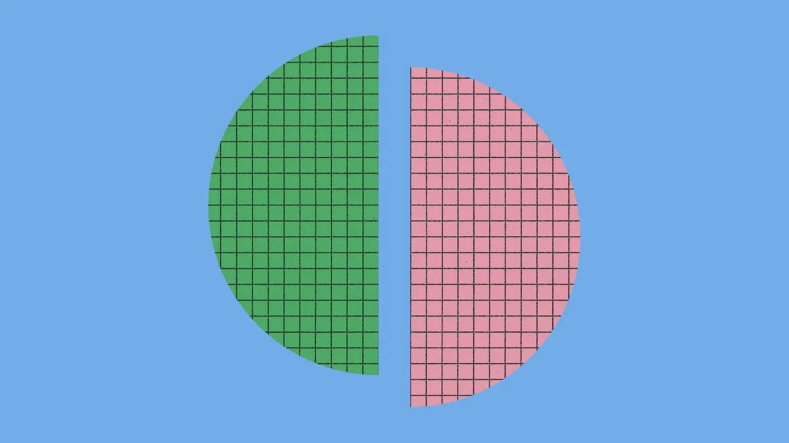
60 秒速览：这篇文章在说什么
译者所加，不是原文的一部分 —— 读完这 6 条，再看原文会快很多。
- 一句话结论：智能体记忆不是「存得越多越好」，而是四层结构 + 一个离线整理动作——「做梦」。
- 四层：会话记录（可搜索的事件日志）→ 记忆笔记（Claude 自己写的显著观察）→ 记忆表示（比如维基，给记忆画一张地图）→ 注入上下文（每次会话都预加载的顶层索引，必须小）。
- 两个主考场：CL-Bench 数据库题看「学习闭环」有没有走通；宝可梦红看「什么才值得记」——判据是屏幕读不到的信息（策略、计划、验证过的规则）。
- 维基的边界：Stainless 约 4.2 亿 token 文档上，「做梦」从 2 次扩到 128 次会话，25 个问题得分从 13% 升到 48%；但能靠单份文档检索的任务几乎没有增益，维基甚至会膨胀到比原始文档还大。
- 最反直觉的一条：给强模型设「只记录失败」这类固定规则，会吃掉记忆增益的大半；告诉它记忆是干什么用的、具体记什么交给它判断，反而更有效。
- 代价：一条错笔记会被每一次会话继承；顶层注入要省 token 就得持续把细节下移；「做梦」要烧算力，产出也不是即时的。
一个常见误读：记忆 = 存档
- 常为每场战斗、每个道具、每个 NPC 各开一个文件（Sonnet 3.7：413 个文件、225 个文件夹，一枚徽章）
- 记忆越长越全越好，靠事后翻找解决
- 用固定规则规定「只记失败」「只记事实」
- 维基等于把原始文档换个形式再放一遍
- 写进记忆了，就等于下次会用
本文的做法：四层 + 一个离线动作
- 只记屏幕读不到的东西：策略、计划、验证过的规则（Fable 5：10 个文件，四枚徽章）
- 顶层保持极小，只放索引与链接（MEMORY.md 只加载前 200 行 / 25 KB）
- 告诉模型记忆是干什么的，具体记什么交给它判断显著性
- 维基必须做抽象与互链，否则等于什么也没抽象
- 要拿会话记录对质并修正，才知道它有没有真的在用
左右两栏是译者按正文归纳，不是原文。
速览与对比卡是译者按正文压缩的，不是原文。正文里带虚线下划线的词可悬停看术语卡，上标数字是译者注。原文 2026-11-06 发布于 Anthropic Research。
人类靠两套机制形成记忆：海马体当场记录，睡眠与休息时再慢慢巩固进新皮层。智能体可以照搬这套分工——工作过程落在会话记录里，「做梦」负责离线整理。全文就是围绕这条记忆层级展开的。
Søren Kierkegaard wrote that life can only be understood backward, but it must be lived forward.1 We’ve encountered a similar bind when designing memory for AI agents.
索伦·克尔凯郭尔写过：生活只能倒着理解，却必须正着过。1为 AI 智能体设计记忆时，我们撞上了同一种两难。
As humans, we encode memory constantly as we go about our lives. The hippocampus plays a central role in this, capturing experiences in the moment so that memories form quickly and are immediately available. But only some experiences are consolidated into long-term knowledge.
Much of that consolidation appears to happen when our brains are offline. As we sleep, and during quiet rest, the hippocampus replays our recent experiences. This is thought to gradually distill those experiences and integrate them into the neocortex—the part of our brains that stores most of what we think of as knowledge.2
Agent memory can use a similar division of labor. Agents capture much of their work in logs or transcripts. Researchers at Letta and UC Berkeley proposed sleep-time compute as a way for models to use idle time between interactions to reorganize their existing context. The same idea can help agents organize their memory by reflecting on logs to fix mistakes or produce new notes and representations. This process is often called dreaming (Figure 1).
We’ve found that dreaming has been a useful tool for helping us give Claude effective memory. In this post, we share how we’ve come to think about agent memory and walk through several evaluations we’ve used to explore agent memory, including the use of dreaming, and what each component contributes to memory organization.
我们发现，「做梦」是个好用的工具，帮我们给 Claude 配上了有效的记忆。本文分享我们如今怎样理解智能体记忆，并逐一走过我们用来探索智能体记忆的几组评测——包括「做梦」的用法，以及每个组成部分对记忆组织各自的贡献。
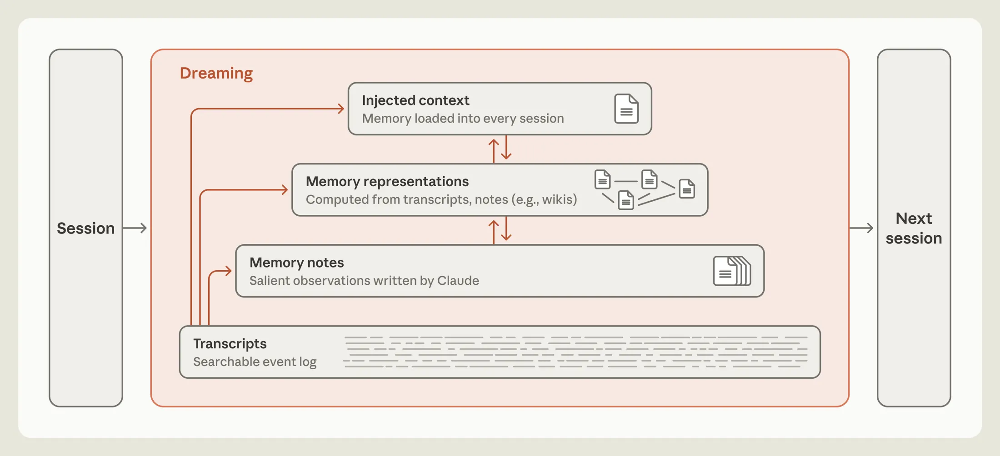
记忆层级：四层，以及「做梦」在层间搬运 最底层是会话记录（可搜索的事件日志），往上依次是 Claude 写的记忆笔记、由记录与笔记算出的记忆表示（如维基），最顶层是每次会话都会加载的注入上下文。「做梦」的原料在最底层，相邻两层之间是双向箭头。
原文图注：Diagram of a memory hierarchy between one session and the next. From bottom to top: transcripts (a searchable event log), memory notes written by Claude, memory representations such as wikis, and injected context loaded into every session. Inside a box labeled “Dreaming,” arrows run from transcripts up to each layer, and in both directions between neighboring upper layers.
这张图怎么看（4 条）
- 从下往上读四个方框：Transcripts → Memory notes → Memory representations → Injected context；越往上越省 token，越往下越原始。
- 看箭头的起点：橙色实线全部从最底层的 Transcripts 出发，说明「做梦」的原料是会话记录本身。
- 相邻两层之间是双向箭头（笔记↔表示、表示↔注入），意味着一轮整理既能往上浮、也能往下沉。
- 最右侧 Next session 只从注入上下文那一层取东西——新会话开场能白拿的只有顶层。
一句话：记忆不是一堆文件，而是一叠可以互相搬运的层级。
Claude can use dreaming to organize memory. This can correct mistakes, create notes, build new memory representations, or shape what’s preemptively loaded into future sessions.
Claude 可以用「做梦」来整理记忆。这可以修正错误、写笔记、搭出新的记忆表示，或者塑造「哪些内容会预先装进未来会话」。
Memory notes记忆笔记
先把「智能体记忆」划清边界：它只指跨会话保留下来、能读到的知识，不含改权重、上下文学习和压缩。人类靠化学信号给记忆打标记、再在离线时重放，Claude 对应的是写记忆笔记——难点在于当场怎么判断「什么算显著」。
By “agent memory,” we mean knowledge that Claude gains from experience—including interactions with users and tasks it’s been assigned—and that it retains between sessions, saved as context it can read later. It excludes other ways models can learn or manage context, such as changes to their weights (the internal parameters set during training), in-context learning (knowledge gained within a single conversation), and compaction (summaries written by Claude that replace its older turns so it can continue working in a new context window).3
In the human brain, chemical signals released before, during, or after an experience can mark a memory as important. Marked memories tend to be replayed more often than unmarked ones during offline periods. This process, called replay, helps stabilize and integrate them into long-term memory.
在人的大脑里，一段经历之前、之中或之后释放的化学信号，可以把一段记忆标记为重要。被标记过的记忆，在离线时段被重放的次数往往多于没被标记的。这个过程叫重放，它帮助这些记忆稳定下来、并整合进长期记忆。
Similarly, Claude can tag salient events in a session log as they happen, so they’re easier to find later, or it can write them to a memory store, such as a folder of memory notes (Figure 2). But how can Claude tell what’s salient in the moment, before it knows what’s coming next?
类似地，Claude 可以在事件发生时，判断会话日志里事件的显著性高低并打上标签，方便日后查找；也可以把它们写进记忆存储——比如一个放记忆笔记的文件夹（图 2）。可是，在还不知道接下来会发生什么的时候，Claude 怎么判断此刻什么算显著？
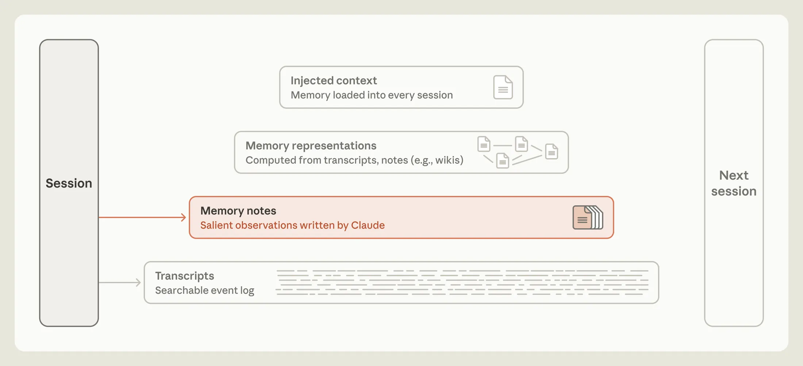
只发生一件事：会话直接写笔记 同一张层级图，这次只高亮记忆笔记：会话临结束时，Claude 把当下的显著观察直接写进笔记。记忆表示与注入上下文这两层此时还没动，这是「当场记」的路径。
原文图注：The same memory hierarchy, with the memory notes layer highlighted. An arrow runs from the session directly to the memory notes, described as salient observations written by Claude.
这张图怎么看（3 条）
- 与图 1 对比：其余三层被淡化，只有 Memory notes 是橙色描边。
- 从 Session 出发有两条箭头：一条橙色进 Memory notes，一条灰色进 Transcripts——先记录，再挑。
- 被淡化的记忆表示层和注入层说明：这一刻只写笔记，还没到整理地图、决定注入什么的时候。
一句话：现场能做的只有「写下来」，判断显著性就发生在这一刻。
Claude can write notes to memory.
Claude 可以往记忆里写笔记。
Memory can be a prediction about what the future will need记忆可以是对未来需求的预测
写下一个规则，就是在赌「这个模式还会再出现」。CL-Bench 的数据库题把这件事变成可测的：只有记忆目录能跨会话带走信息，模型得自己把「答错了什么、为什么错」沉淀成规则。老模型只走到一半，Opus 5 才把闭环走通。
Memory is, occasionally, a prediction. By writing down a rule, an agent predicts that the pattern it’s describing will be relevant again. For instance, writing down a verified fact is a prediction that an agent in a future session will want to rely on that fact without double-checking it. Over time, Claude has become much better at making these kinds of predictions.
记忆偶尔是一种预测。写下一个规则，就等于预测：它描述的这个模式还会再次派上用场。例如写下一条核实过的事实，就是在预测：未来某次会话里的智能体会想直接依赖这条事实，而不再复核一遍。随着时间推移，Claude 在这类预测上已经明显变强。
Consider a task from Continual Learning Bench (CL-Bench) 1.0, a benchmark that measures an agent’s ability to use memory in order to tackle long-horizon tasks. One particular task asks Claude to answer a series of questions by looking up information in a database. After Claude gives an answer, it’s told the correct solution and can write a memory to help answer future questions.
看持续学习基准（CL-Bench）1.0里的一道题。这个基准衡量智能体利用记忆去处理长时程任务的能力。其中一道题要求 Claude 通过查数据库来回答一连串问题。Claude 给出答案后，会被告知正确答案，并且可以写一条记忆，帮自己回答后面的问题。
Memory can support a learning loop here. If Claude gets a question wrong, it can record the failure, come up with theories about what went wrong, test those theories, and turn what it finds into a rule about how to answer in the future.
记忆在这里能撑起一个学习闭环。如果答错了，它可以记下这次失败，提出关于「哪里出了问题」的假说，验证这些假说，再把结论变成一条「以后该怎么答」的规则。
We ran the CL-Bench 1.0 task using Claude Managed Agents.4 Claude started each question in a fresh session, with one exception: it could retrieve files from a memory directory that persisted from one session to the next.
我们借助 Claude 托管智能体跑了这道 CL-Bench 1.0 题。4Claude 每道题都从一个全新的会话开始，只有一个例外：它可以从记忆目录里读文件——这个目录会跨会话保留下来。
Different models achieved different levels of success at creating their own learning loops. Claude Sonnet 4.6 got as far as generating theories about why an answer was wrong. Its memory directory contained a scattering of files, each listing several untested guesses.
不同模型在「建立自己的学习闭环」上走到了不同的程度。Claude Sonnet 4.6 只走到「提出关于答案为何错误的假说」这一步。它的记忆目录里散着若干文件，每个文件列着几条没被验证过的猜测。
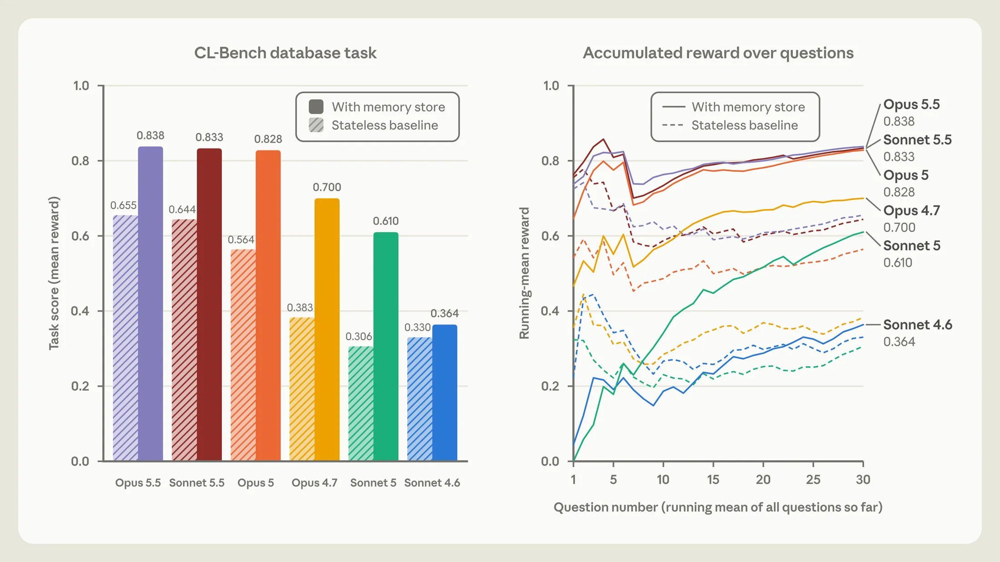
有记忆 vs 无状态：六个模型的 CL-Bench 数据库题得分 左图每个模型两根柱：实心是「有记忆存储」，斜纹是「无状态基线」；右图是同样六条曲线在 30 道题上的累计均值。Sonnet 4.6 只有 0.330 → 0.364，几乎没吃到记忆的好处；Opus 5.5 是 0.655 → 0.838。
原文图注：Left: bar chart of mean reward on the CL-Bench database task, stateless baseline versus memory store. Opus 5.5: 0.655, 0.838. Sonnet 5.5: 0.644, 0.833. Opus 5: 0.564, 0.828. Opus 4.7: 0.383, 0.700. Sonnet 5: 0.306, 0.610. Sonnet 4.6: 0.330, 0.364. Right: line chart of running-mean reward over 30 questions for the same models, with and without memory.
这张图怎么看（4 条）
- 左图先看每一对的差值：差值越大，说明记忆帮得越多；Sonnet 4.6 的差值只有 0.034。
- 右图虚线是无状态、实线是有记忆；两条线的开口在越强的模型上张得越早。
- 两幅图共用图例：With memory store 实心，Stateless baseline 斜纹（右图是实线/虚线）。
- 右图横轴写的是 running mean of all questions so far——越往后越稳，前几题的起伏不必当真。
一句话：记忆的增益随模型变强而放大，弱模型几乎吃不进去。
CL-Bench database task, comparing memory with a stateless baseline across models.
CL-Bench 数据库题：各模型在有记忆与无状态基线下的对比。
Claude Opus 4.7 consolidated its notes into a single reference document and began marking which facts it had checked and which were still unconfirmed. Claude Sonnet 5 marked each answer as confirmed after the grader had checked it, and wrote a correction when it had answered wrong.
Claude Opus 4.7 把笔记汇总成一份参考文档，并开始标注哪些事实它核查过、哪些还没确认。Claude Sonnet 5 会在评分器核对之后把每个答案标为已确认；答错时，就写一条更正。
Claude Opus 5 was the first of these models to close the loop. Most of its entries included a rule (and also how it knew the rule was true), answers to earlier questions, and clear warnings about traps it had discovered along the way (Figure 3).
Claude Opus 5 是这批模型里第一个把闭环走通的。它的多数条目都包含一条规则（以及它凭什么知道这条规则成立）、此前问题的答案，还有对途中发现的陷阱的明确警告（图 3）。
Like Opus 5, Claude Opus 5.5 and Claude Sonnet 5.5 both closed the loop, using memory to capture validated rules about how to best answer future questions. With memory, both scored about the same as Opus 5, though their baseline performance without memory was slightly higher.
和 Opus 5 一样，Claude Opus 5.5 与 Claude Sonnet 5.5 也都走通了闭环，用记忆沉淀出「以后怎样答最好」这类经过验证的规则。有记忆时，两者的得分与 Opus 5 大致持平；不过它们在没有记忆时的基线成绩略高一些。
Claude has learned to judge salienceClaude 学会了判断显著性
用宝可梦红做第二个考场：给每个模型一个可读写的记忆文件夹。Sonnet 3.7 什么都记，413 个文件反而拖慢了自己；Fable 5 只记「游戏不会明说」的策略与规则，10 个文件拿到四枚徽章。判断标准从「可能有用」变成「不记下来就会消失」。
We also evaluated Claude’s ability to play Pokémon Red, a game that challenges Claude to navigate complex long-horizon tasks, as a test of Claude’s judgment about what to save to memory. At the start of each run, we gave each model a folder of memory files that it could read from and write to while it played (Figure 4).
我们还评测了 Claude 玩宝可梦 红的能力——这款游戏要求 Claude 在复杂的长时程任务里做导航——用来检验它对「什么该存进记忆」的判断力。每次运行开始时，我们给每个模型一个记忆文件夹，它可以在游戏过程中读写（图 4）。
We compared the memory folders from one run each of Claude Sonnet 3.7 and Claude Fable 5, when each was about 10,000 steps into the game.5 A key difference we noticed was what each model thought was worth remembering. Sonnet 3.7 assumed everything might matter and wrote to memory indiscriminately. Its memory folder contained an archive of encounters, often with a separate file for each battle it fought, each item it found, and each non-player character it met. Ultimately, Sonnet 3.7 wrote 413 memory files across 225 folders and earned one badge (badges mark a player’s progress through the game).
我们各取一次运行来比较记忆文件夹：Claude Sonnet 3.7 与 Claude Fable 5，都玩到大约第 10,000 步。5我们注意到的一个关键差异，是它们各自认为什么值得记。Sonnet 3.7 假设什么都可能有用，不加区分地往记忆里写。它的记忆文件夹像一份遭遇存档：经常为每场战斗、捡到的每个道具、遇到的每个非玩家角色各开一个文件。最终，Sonnet 3.7 在 225 个文件夹里写了 413 个记忆文件，拿到一枚徽章（徽章代表玩家在游戏里的进度）。
Fable 5, by comparison, wrote nine files in two folders, plus a single top-level file called `global.md`, and earned four badges.
相比之下，Fable 5 只在两个文件夹里写了九个文件，外加一个顶层文件 `global.md`，拿到了四枚徽章。
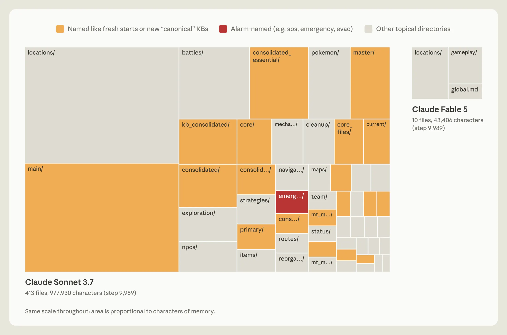
同一尺度下的两份宝可梦记忆目录 面积代表记忆字符数，不是文件数。Sonnet 3.7（413 个文件、977,930 字符）几乎铺满整张图，Fable 5（10 个文件、43,406 字符）只占右侧一小块；两者都截在第 9,989 步。
原文图注：Two treemaps of Pokémon memory directories at the same scale, where area shows characters of memory. Claude Sonnet 3.7’s is large and crowded, with 413 files and 977,930 characters across folders such as locations, main, battles, and several “consolidated” folders. Claude Fable 5’s is small, with 10 files and 43,406 characters in locations, gameplay, and global.md.
这张图怎么看（4 条）
- 先看面积比例，再看右边那三个小方块：Fable 5 的 locations/、gameplay/ 与 global.md。
- 颜色是分类：橙点是「像新起点或新的规范知识库」的目录，红点是警报式命名（sos、emergency、evac），灰点是其他主题目录——Sonnet 3.7 大量用「consolidated」「core」这类词给自己建规范库。
- 标题下都写着 step 9,989：正文说的「约第 10,000 步」就是这个截点。
- 注意 Fable 5 的 global.md 只占一小条，却是唯一的顶层文件——顶层要小，正文后面会讲。
一句话：同样的步数，记忆体积差 20 多倍，进度却反过来了。
Claude’s memory directories for Sonnet 3.7 versus Fable 5 while playing Pokémon.
玩宝可梦时，Sonnet 3.7 与 Fable 5 的记忆目录对比。
Sonnet 3.7’s approach was a problem mainly because the game state of Pokémon changes constantly—Sonnet 3.7’s detailed record was continuously going out of date. As a result, as Claude progressed, it had to spend more time and resources combing through its memories rather than playing the game. Around step 10,000, for example, Sonnet 3.7 started its fourth folder of “master” memory files. Over the next 17 steps, it created six files, deleted nine others, and took no actions in the game itself.
Sonnet 3.7 的做法成问题，主要是因为宝可梦的游戏状态一直在变——它那份详尽的记录不断过期。结果，随着游戏推进，Claude 得把越来越多的时间和资源花在翻自己的记忆上，而不是玩游戏。比如在第 10,000 步前后，Sonnet 3.7 开始建第四个「主」记忆文件夹。接下来的 17 步里，它新建了六个文件、删掉另外九个，游戏本身一步没走。
Fable 5’s approach used memory for things the game didn’t explicitly tell it. Some of the kinds of information Sonnet 3.7 wrote to memory—such as how much money the player has or where the player is on the map—can be read off the screen every turn, so storing it is redundant. By contrast, memory files about strategy, plans, and tested rules exist only if Claude works them out, and they disappear unless Claude writes them down.
Fable 5 的做法，是把记忆用在游戏没有明说的东西上。Sonnet 3.7 写进记忆的某些信息——比如玩家有多少钱、玩家在地图上的位置——每回合都能从屏幕上直接读出来，存下来是冗余的。相反，关于策略、计划和验证过的规则的文件，只有 Claude 想出来了才存在；不写下来，它们就消失了。
Fable 5 organized its memory accordingly. Its `global.md` file acted as a dashboard, holding the current goal, a prewritten plan for tackling gyms (the challenges where badges are won), and the model’s own rules for using memory. A `locations` folder held plans for navigating particular routes, and a `gameplay` folder held strategies based on what it had learned about how the game works. For example, after seven Poké Balls in a row failed to catch a Magikarp (one of the easiest Pokémon to catch), Claude wrote, “If 3+ balls fail in a row, VARY the timing (insert extra ‘wait’ presses between menu steps) - the catch landed right after doing this.”
Fable 5 据此组织自己的记忆。它的 `global.md` 像一块仪表盘：放着当前目标、一份预先写好的打道馆计划（道馆是赢徽章的挑战），以及模型自己定的「怎么用记忆」的规则。`locations` 文件夹放具体路线的导航计划，`gameplay` 文件夹放它从游戏机制里学到的策略。例如，连续七个精灵球都没抓到鲤鱼王（最容易抓的宝可梦之一）之后，Claude 写道：“如果连续 3 个以上球都失败，就改变时机（在菜单步骤之间多插入几次「等待」）——这样做之后立刻就成功了。”
With a much smaller memory folder, Fable 5 progressed much further in the game than Sonnet 3.7. Opus 5.5 took a similar approach: it kept a small folder of memory notes that tracked its current goal and next steps, rewrote them as it played, and beat the game.
靠一个小得多的记忆文件夹，Fable 5 在游戏里推进得比 Sonnet 3.7 远得多。Opus 5.5 用了类似做法：维护一个小文件夹，记着当前目标和下一步，边玩边重写，最后通关。
Steering Claude to write memory引导 Claude 写记忆
要告诉它记忆是干什么用的，别规定怎么用。给强模型设「只记录失败」这类固定规则，反而吃掉记忆带来的大半增益；而给老模型补「先读记忆、再验证假说」的提示，几乎能让得分翻倍——同一条引导，对不同代际的模型作用完全不同。
We’ve found that it helps to tell Claude what memory is for, but not how to use it. On CL-Bench, we simply told Claude that a memory folder was available. That general guidance was enough for Opus 4.7 and Opus 5 to use memory effectively, and it gave both a noticeable boost in performance (Figure 3).
我们发现，告诉 Claude 记忆是干什么用的、但不规定怎么用，效果更好。在 CL-Bench 上，我们只是告诉 Claude「有一个记忆文件夹可用」。这条笼统的提示就足以让 Opus 4.7 和 Opus 5 有效地使用记忆，并给两者的表现带来明显提升（图 3）。
We also tested giving the models specific rules about what they should write to memory, with one rule per test. We compared how much each model gained from memory with each rule against how much it gained without it. When we set a rule to “record only failures,” both Opus 5 and Opus 4.7 lost much of the performance boost that memory gave them (Figure 5, right).6 For stronger models, giving them freedom to judge salience was more effective than setting fixed rules in advance, and those rules could end up weakening performance.
我们也试过给模型规定「该往记忆里写什么」的具体规则，每次测试只给一条规则。我们比较了每条规则下模型从记忆里得到的增益，和没有这条规则时的增益。当我们把规则设成「只记录失败」时，Opus 5 和 Opus 4.7 都丢掉了记忆带来的一大部分增益（图 5 右）。6对更强的模型来说，让它们自主判断显著性，比事先设定固定规则更有效；那些规则反而可能削弱表现。
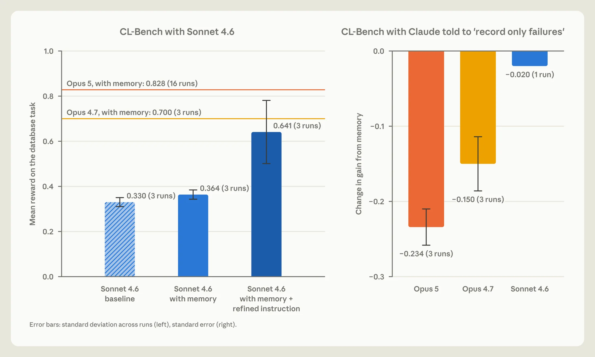
引导的作用：补提示 vs 加规则 左图是 Sonnet 4.6 的三根柱（基线 0.330、有记忆 0.364、有记忆 + 细化指令 0.641），两条横线是 Opus 5 与 Opus 4.7 有记忆时的参考值；右图是「只记录失败」这条规则带来的增益变化，三个模型全为负。
原文图注：Left: bar chart of Sonnet 4.6’s mean reward on the CL-Bench database task: 0.330 at baseline, 0.364 with memory, and 0.641 with memory and refined instruction. Reference lines mark Opus 4.7 with memory at 0.700 and Opus 5 with memory at 0.828. Right: change in memory gain when told to record only failures: Opus 5, −0.234; Opus 4.7, −0.150; Sonnet 4.6, −0.020.
这张图怎么看（4 条）
- 左图三根柱的标签带着 runs 数（3 runs），误差棒是跨 run 的标准差；横线标签写着 16 runs / 3 runs。
- 0.364 → 0.641 这一步只多了一句「先读记忆、再验证假说」，模型没换。
- 右图纵轴是 Change in gain from memory：负值表示这条规则把记忆的增益吃掉了，Opus 5 的 −0.234 最深。
- 右图 Sonnet 4.6 只有 1 run（−0.020），别拿它和 3 runs 的另外两根比精度。
一句话：同一条「只记失败」的规则，对强模型伤害更大。
Left: Sonnet 4.6 on the CL-Bench database task with and without prompting to guide memory usage. Right: how much each model’s gain from memory changed when it was told to record only failures.
左：Sonnet 4.6 在 CL-Bench 数据库题上，有无「引导记忆用法」提示的对比。右：被告知「只记录失败」后，各模型从记忆中所得的增益变化。
We also noticed that steering helped older models the most. For instance, Sonnet 4.6 often didn’t read files from its memory directory and failed to test its theories about why an answer was wrong.
我们还注意到，这类引导对较老的模型帮助最大。例如，Sonnet 4.6 经常不去读记忆目录里的文件，也没有去验证自己关于「答案为何错误」的假说。
In this case, prompting Claude to read its memory files before answering—and then to explicitly test its theories—nearly doubled its benchmark score (Figure 5, left). Sonnet 5 does this on its own. Without being prompted to, it read its memory before answering 9 out of 10 times. By comparison, Sonnet 4.6 did this less than half of the time.
在这个例子里，提示 Claude 在回答前读记忆文件、然后再明确验证自己的假说，几乎让它的基准得分翻倍（图 5 左）。Sonnet 5 自己就会这么做。没人提示，它也有十次里有九次在回答前读了记忆。相比之下，Sonnet 4.6 这样做的时候不到一半。
With frontier Claude models, we typically give simple guidance to create memory notes when a person asks them to or when something is clearly worth remembering, and we leave that judgment up to Claude.
对前沿的 Claude 模型，我们通常只给简单指引：当用户要求它记、或明显有值得记住的东西时，就写记忆笔记；这个判断交给 Claude 自己做。
Dreaming can correct memory「做梦」可以修正记忆
笔记写错了，后来的会话会照样信它。月见山那段单向崖边把这件事演了一遍：Claude 记错了宝可梦中心在哪一侧，掉回原路还以为自己走过头了。拿会话记录对质、改掉那条笔记，它才走回洞里、走到华蓝市。
Since Claude writes to memory based on what it judges to be salient in-session, a note that’s wrong from the start or that drifts as the environment changes can be read, and trusted, by Claude in a later session.
由于 Claude 是按自己在会话里判断的显著性来写记忆，一条开局就错、或随环境变化而漂移的笔记，可能在后来的会话里被 Claude 读到、并信以为真。
Dreaming gives Claude a way to test its notes against the original transcripts (Figure 6). We saw a positive example of this when Claude played Pokémon using Managed Agents with a mounted directory for its memories.
「做梦」给了 Claude 一个办法：拿笔记去和原始会话记录对质（图 6）。我们看到过一个正面例子：Claude 用托管智能体玩宝可梦，并挂载了一个目录来存记忆。
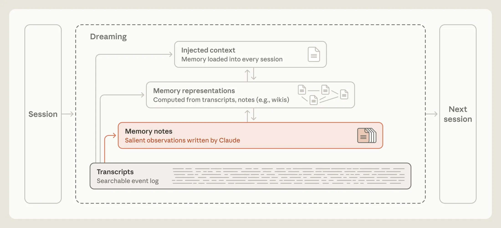
「做梦」做的一件事：拿会话记录校正笔记 虚线框标出这一轮「做梦」的范围，橙色高亮记忆笔记；一条粗箭头从最底层的 Transcripts 直上 Memory notes，表示逐条对质、改错。其余三层这一轮不动。
原文图注：The memory hierarchy with dreaming, highlighting an arrow from the transcripts layer up to the memory notes layer, which shows dreaming correcting notes against transcripts.
这张图怎么看（3 条）
- 与图 1 对比：整个「做梦」框变成虚线，只有笔记层被高亮——这一轮只修笔记。
- 看那条最陡的箭头：它跳过记忆表示层，直接从 Transcripts 连到 Memory notes，这就是「校对」。
- 其余箭头保持灰色，表示它们没参与这一轮。
一句话：校正的原料是原始记录，不是别的笔记。
Dreaming can correct mistakes in memory.
「做梦」可以修正记忆里的错误。
In one part of the game, the player has to get through Mt. Moon, a cave system with its entrance on the west side of the map and its exit on the east.7 Near the entrance is a trap: a one-way ledge that drops the player onto the route they came from, with no clear way to climb back up. Claude was using the PokéCenter, a building at the mountain’s entrance, as a landmark, so whether it walked off the ledge depended on which side of the mountain it thought the PokéCenter was on.
游戏里有一段，玩家必须穿过月见山（Mt. Moon）——一个入口在地图西侧、出口在东侧的洞穴系统。7入口附近有个陷阱：一段单向的崖边，一旦掉下去就会落回你来时的那条路，而且没有明显能爬回去的路。Claude 把宝可梦中心（PokéCenter，山入口处的一栋建筑）当地标，所以它会不会从崖边掉下去，取决于它以为宝可梦中心在山哪一侧。
At one point, Claude wrote down (incorrectly) that the PokéCenter was on the east side. When it walked out of the PokéCenter, it announced, “Mt Moon is behind me,” and updated its notes: “Mt Moon DONE.” But Mt. Moon was not behind it. A few actions later, Claude went over the ledge and landed back on the route it had come from (Figure 7). Its navigation tool didn’t show the drop, so Claude concluded, “I overshot far west,” and that it had been on the correct side all along. It hadn’t.
有一次，Claude（错误地）记下宝可梦中心在东侧。它走出宝可梦中心时宣称“月见山在我身后”，并更新笔记：“月见山 完成。”但月见山并不在它身后。几步操作之后，Claude 从崖边掉了下去，落回了它来时的那条路（图 7）。它的导航工具没有显示这次坠落，于是 Claude 断定“我往西走过头了”，并认为自己一直都在正确的那一侧。它并没有。
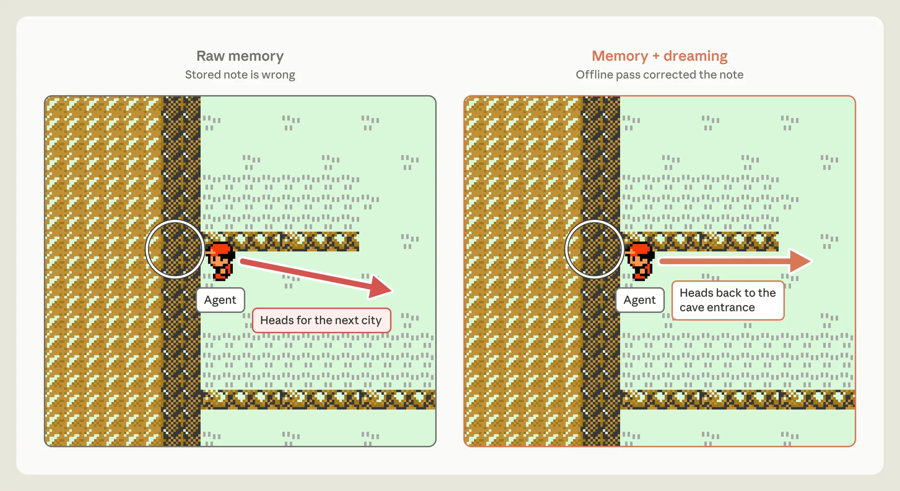
一条记错的笔记如何改变路线 左「Raw memory」：笔记记错宝可梦中心在山东侧，Claude 走出中心后说「月见山在我身后」，朝下一座城市走；右「Memory + dreaming」：离线校对后笔记被改正，它转身回洞口。
原文图注：Two Pokémon map panels with the agent next to a ledge. Left, “Raw memory,” where the stored note is wrong: an arrow shows the agent heading for the next city. Right, “Memory + dreaming,” where an offline pass corrected the note: an arrow shows the agent heading back to the cave entrance.
这张图怎么看（3 条）
- 两幅图场景完全相同（同一段崖边、同一个 Agent 位置），差别在标题下那行小字（Stored note is wrong / Offline pass corrected the note）和箭头旁的标注。
- 两幅图的红箭头都朝右（左图那条略朝右下），区别在标注：左图写 Heads for the next city，右图写 Heads back to the cave entrance——标注里的目的地就是结论。
- 白圈标出的是 Agent 左侧那段岩壁与崖边；两边都没画「爬回去的路」，这正是陷阱所在。
一句话：同一条笔记写对还是写错，决定它往哪走。
A corrected memory note changed the outcome in Pokémon. With the uncorrected note, Claude says, “Mt Moon is behind me,” heads for the next city, and ends up back on the route it came from. With the note corrected by dreaming, it says, “Now I need to find the Mt Moon cave entrance to re-enter,” and goes back into the cave.
一条被修正的记忆笔记，改变了宝可梦里的结局。笔记没修正时，Claude 说“月见山在我身后”，朝下一座城市走，结果又回到了来时的路上。笔记被「做梦」修正后，它说“现在我得找到月见山洞口重新进去”，然后回头进了洞。
We then tested whether dreaming could help Claude avoid this trap. We ran dreaming on the memory folder that contained the wrong location for the PokéCenter: Claude checked the note against the session transcript, caught its error, and rewrote it. The transcript gave Claude a ground truth to validate its memory against. With the corrected memory note, Claude went straight back into Mt. Moon and eventually reached Cerulean City.
接着我们测试了「做梦」能否帮 Claude 避开这个陷阱。我们在那个记着错误宝可梦中心位置的记忆文件夹上跑了一次「做梦」：Claude 拿笔记和会话记录核对，发现了自己的错误，并改写过来。会话记录给了 Claude 一个可以用来校验记忆的基准事实。带着修正后的记忆笔记，Claude 径直回到月见山，最终到达了华蓝市（Cerulean City）。
In the run with the uncorrected note, Claude dropped back onto that earlier route three times. After the third failure, Claude seemed to give up, writing, “I’m going to stop rather than keep looping.” Our setup’s automatic reply instructed it to continue. So it did, all the way back to Pewter City, the town before the mountain, where it hoped to heal and restock. The run ended without Claude ever reaching Cerulean City.
在笔记未修正的那次运行里，Claude 三次掉回之前那条路。第三次失败后，Claude 似乎放弃了，写道：“我打算停下来，而不是继续绕圈。”我们这套设置的自动回复指示它继续。它照做了，一路走回山前的小镇深灰市（Pewter City），希望在那里治疗和补给。那次运行结束时，Claude 始终没能到达华蓝市。
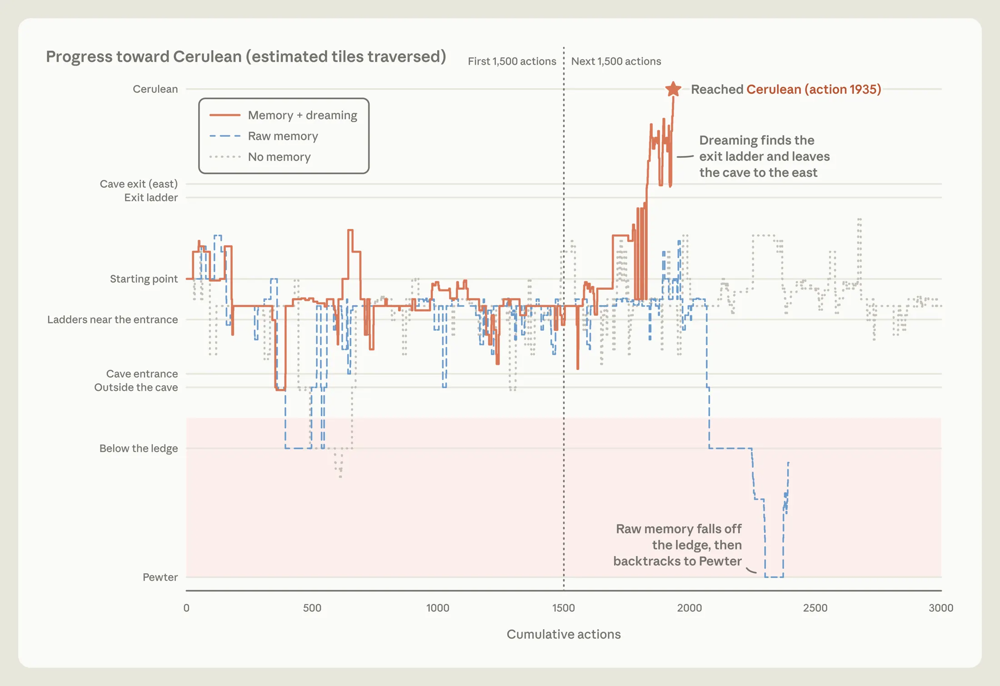
3,000 步里的三次坠落与一次出洞 纵轴是从 Pewter 到 Cerulean 的估计进度，横轴是累计动作数；橙红实线是「记忆 + 做梦」，蓝色虚线是「原始记忆」，灰色点线是「无记忆」。红线在 1,935 步抵达华蓝市，蓝线从崖边掉下去后一路退回深灰市。
原文图注：Line chart of progress toward Cerulean over 3,000 cumulative actions. The memory plus dreaming run reaches Cerulean at action 1,935. The raw memory run falls off the ledge and backtracks to Pewter. The run with no memory never reaches Cerulean.
这张图怎么看（5 条）
- 先认纵轴那几道横线：Pewter（最底）→ Below the ledge（粉色带）→ Cave entrance / Outside the cave → Ladders near the entrance → Starting point → Cave exit (east) → Cerulean（最顶）。
- 蓝色虚线每次下探进粉色带就是一次从崖边掉下去；它掉了三次，最后停在 Pewter 那条线。
- 橙红实线在 1,500 步之后陡升，旁边的标注是 Dreaming finds the exit ladder and leaves the cave to the east，终点是星号 Reached Cerulean (action 1935)。
- 灰色点线一直在中段来回，从没接近 Cave exit——无记忆那次连洞口都没走出去。
- 中间那条竖虚线把图切成 First 1,500 actions / Next 1,500 actions，前一半三条线还很难分。
一句话：校正笔记省下的不是时间，是三次坠落。
Dreaming corrects the memory, and Claude goes back into the cave and reaches the next city. The run with the uncorrected note (“Raw memory”) never gets past the mountain, and neither does the run with no memory.
「做梦」修正了记忆，Claude 回到洞里，到达了下一座城市。笔记未修正的那次运行（“原始记忆”）从未翻过这座山，无记忆的那次也没有。
Dreaming can build new memory representations「做梦」可以搭出新的记忆表示
维基是给记忆画的一张地图：一页一个主题，页间互相链接。在 Stainless 约 4.2 亿 token 的内部文档上，把「做梦」从 2 次会话扩到 128 次，25 个问题的得分从 13% 涨到 48%；但维基不是万能——能靠单份文档检索到的任务，它几乎没有增益，甚至会长得比原始文档还大。
With dreaming, Claude can build representations to help navigate memory (Figure 9). One type of memory representation it uses is called a wiki, a collection of pages written and maintained by Claude that gathers what Claude knows about one subject and links it to other notes.8 These links effectively provide Claude with a map it can use to sift through its memory and efficiently locate memories when they’re needed.
借助「做梦」，Claude 可以搭出一些记忆表示——帮它整理和查找记忆的结构——用来在记忆里导航（图 9）。它使用的一类记忆表示叫维基：一组由 Claude 自己撰写和维护的页面，汇集它关于某个主题所知的内容，并链接到其他笔记。8这些链接实际上给了 Claude 一张地图，让它能翻检记忆，在需要时高效定位。
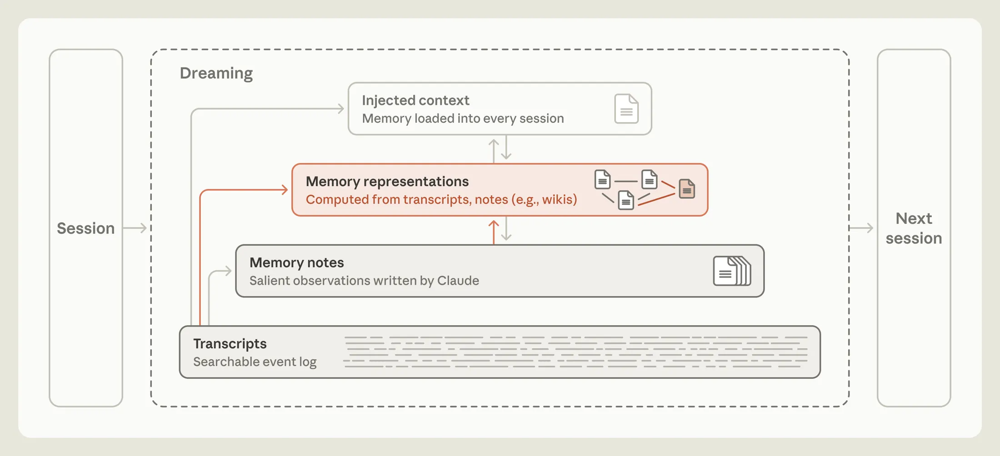
「做梦」的第三种产出：把记忆表示搭起来 同一张层级图，这一轮高亮记忆表示层：箭头同时从 Transcripts 和 Memory notes 进入它，表示维基这类页面由「原始记录 + 已有笔记」共同算出。
原文图注：The memory hierarchy with dreaming, highlighting arrows from transcripts and from memory notes up to the memory representations layer, such as wikis.
这张图怎么看（3 条）
- 找两条进入记忆表示层的箭头：一条来自最底层（记录），一条来自笔记层——两层都是原料。
- 表示层与注入层之间是双向箭头：地图可以往上供索引，也可以被索引修正。
- 把图 2、图 9、图 13 连着看：三次高亮分别落在笔记、记忆表示、注入上下文，正好是三件「做梦」能做的事。
一句话：表示层是「算出来的」，不是写出来的。
Dreaming can build memory representations.
「做梦」可以搭出记忆表示。
Representations like wikis can help Claude traverse its ever-growing knowledge base. We explored the benefit of wikis as a memory representation using a corpus of internal documents—about 350,000 files, roughly 420M tokens—from Stainless, a software company we acquired in May. We created an evaluation set of 25 questions about this corpus and gave Claude a search tool to explore it. We also instructed Claude to build a wiki based on these files using dreaming. Over 128 sessions, we prompted Opus 5 agents to explore the files, write or correct linked wiki pages, merge duplicates, and check claims against the sources.
像维基这样的记忆表示，能帮 Claude 穿行于它不断增长的知识库。为了考察维基作为一种记忆表示的价值，我们用了一批内部文档——约 35 万个文件、约 4.2 亿 token——来自我们五月收购的软件公司 Stainless。我们围绕这批语料设计了 25 个问题的评测集，并给 Claude 一个搜索工具去翻找。我们还指示 Claude 用「做梦」基于这些文件建一个维基。在 128 次会话里，我们让 Opus 5 智能体去翻文件、撰写或修正互相链接的维基页面、合并重复页面，并对照来源核对论断。
Each session built on the progress that agents made in prior sessions, using a shared log to coordinate work. As we scaled dreaming from two sessions to 128, performance on the 25 questions grew from 13% to 48% of graded criteria (Figure 10).
每次会话都建立在之前会话的进展之上，并用一份共享日志来协调工作。当「做梦」从两次会话扩到 128 次，25 个问题上的表现从满足 13% 的评分要点升到 48%（图 10）。
Claude builds its wikis incrementally. After creating an initial wiki, it uses subsequent rounds of dreaming to add to, edit, or prune it. In the early rounds of dreaming, Claude’s knowledge is like that of a new employee, and its ability to answer questions based on the wiki alone is limited. The more it dreams, the richer its knowledge map grows, like that of a seasoned employee. In our tests, we found that the wiki helped Claude the most when we also gave it access to a search tool. When it used both search and the wiki, Claude’s aggregate score rose from 54% to 61% as that wiki grew, compared with 53% when it had access to the search tool alone. Claude’s best score was 48% when it used only the wiki to answer questions. Using search and the wiki also saved about 20,000 tokens per question.
Claude 是逐步搭维基的。建好初始维基后，它用后续几轮「做梦」来补充、修改或修剪。在「做梦」的头几轮，Claude 的知识像新员工，光靠维基答题的能力有限。做梦的轮次越多，它的知识地图越丰富，像老员工那样。在测试里我们发现，当我们同时给它搜索工具时，维基的帮助最大。同时用搜索和维基时，随着维基长大，Claude 的总分从 54% 升到 61%；只有搜索工具时是 53%。只用维基答题时，Claude 的最好成绩是 48%。同时用搜索和维基，每道题还省了约 2 万 token。
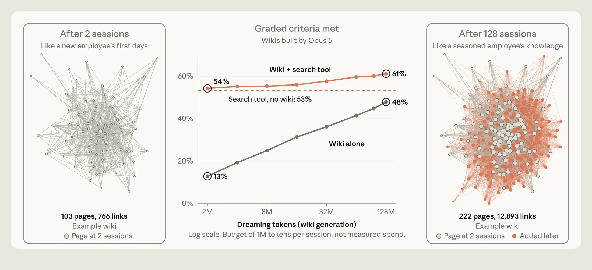
维基长大以后：13% → 48%，以及 54% → 61% 中间折线：横轴是「做梦」消耗的 token（2M 到 128M，对数刻度），纵轴是 25 个问题里满足的评分要点。两侧是同一个示例维基在 2 次与 128 次会话后的网络图：103 页 766 条链接 → 222 页 12,893 条链接。
原文图注：Center: line chart of graded criteria met as wiki generation grows from 2M to 128M dreaming tokens. Wiki plus search tool rises from 54% to 61%, wiki alone rises from 13% to 48%, and the search tool with no wiki is flat at 53%. Left and right: network graphs of an example wiki, with 103 pages and 766 links after 2 sessions and 222 pages and 12,893 links after 128 sessions.
这张图怎么看（4 条）
- 三条线分开看：Wiki + search tool 从 54% 到 61%；Wiki alone 从 13% 到 48%；Search tool, no wiki 是一条 53% 的水平虚线，不随维基长大而变。
- 左右两张网络图共用图例：浅灰点是 2 次会话时就有的页，橙点是后来新增的；注意右侧中心密度的变化。
- 横轴标着 Log scale，2M→8M→32M→128M 每一格都是 4 倍，别读成线性增长。
- 图下一行小字：Budget of 1M tokens per session, not measured spend——「2M」是两轮各 1M 的预算口径。
一句话：维基单独用能到 48%，配上搜索到 61%，但纯搜索本身就有 53%。
Center: scores on 25 questions about a corpus of documents from a company as Claude built wikis over sequential sessions. Left and right: an example wiki after two and 128 sessions; each dot is a page, and lines join linked pages.
中：Claude 在连续会话里建维基时，对一家公司文档语料的 25 个问题的得分。左与右：一个示例维基在两次和 128 次会话后的样子；每个点是一页，连线表示页面之间有链接。
We wanted to test which kinds of tasks benefited from Claude having a wiki. To do this, we used the Harvey LAB benchmark along with a collection of documents about a merger. The benchmark gives Claude a set of documents and asks Claude to generate a legal brief based on their content. The benchmark then grades the brief against a list of criteria. While a tad less engaging, perhaps, than a Pokémon run, these evaluations give us diverse collections of documents to build wikis from.
我们想测试哪几类任务能从「Claude 有维基」中受益。为此我们用了 Harvey LAB 基准，外加一批关于一次并购的文档。这个基准给 Claude 一组文档，要求它根据内容生成一份法律简报。然后按一份评分要点清单给简报打分。这些评测也许比玩宝可梦枯燥一点，但它们提供了多样的文档集合，可以用来建维基。
We instructed Claude to build a wiki from the documents. We then asked Claude to answer questions (about the merger) or generate legal briefs (the LAB benchmark) both from the wiki and from a direct file search. One test asked 24 questions about the merger (Figure 11, left), more than half of which needed Claude to find information across several documents, and many of which also needed Claude to use judgment or do math. On those items (red and orange lines), Claude scored 87% when it consulted the wiki, compared with 73% when it used search alone.
我们指示 Claude 从这些文档建一个维基。然后要求 Claude 分别通过维基、以及直接搜文件，来回答（关于这次并购的）问题、或生成法律简报（LAB 基准）。其中一项测试问了 24 个关于并购的问题（图 11 左），超过一半要求 Claude 跨好几份文档找信息，很多还需要它做判断或算数。在这些条目上（红线和橙线），查维基时 Claude 得 87%，只用搜索时是 73%。
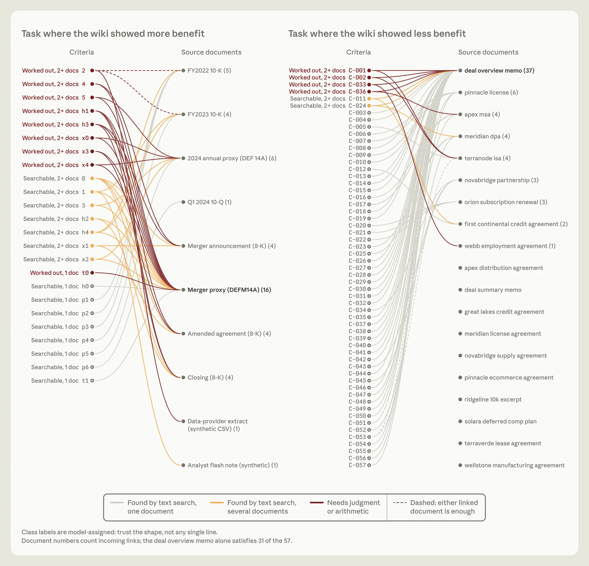
两类任务的对照：跨文档综合 vs 单文档检索 两幅桑基图都把「评分条目」连到「满足它所需的来源文档」。左：24 个条目里多数要跨两份以上文档，9 条需要判断或算数；右：57 个条目大多能靠 deal overview memo 一份文档搞定。
原文图注：Two diagrams linking graded criteria to source documents. Left, the task where the wiki showed more benefit: most of the 24 criteria connect to two or more of 10 documents, and nine need judgment or arithmetic. Right, the task where the wiki showed less benefit: most of the 57 criteria can be found by text search in a single document, usually the deal overview memo.
这张图怎么看（4 条）
- 先认颜色：灰=一份文档文本搜索即可，橙=要跨多份，红=要判断或算术，虚线=两份里任一份就够。
- 左图红线和橙线的密度就是「维基有增益」的部分；右图几乎全是灰色，所以维基没有优势。
- 右侧括号里的数字是「有多少条目指向这份文档」：deal overview memo (37)，图下小字说它一份就满足了 57 条里的 31 条。
- 图下那行 Class labels are model-assigned 是作者自己的提醒：看形状，别抠单根线。
一句话：维基帮的是「要综合、要判断」的任务，不是「能搜到」的任务。
Each panel lists what was graded (left) and the source documents needed to meet each one (right). Left: 24 questions about a merger, which can be answered by looking at mostly public filings. More than half of the criteria required combining information from several documents. Right: a LAB task where the wiki showed no clear gain. Most criteria could be met from a single document.
每个面板左列是被打分的条目，右列是满足它所需的来源文档。左：24 个关于并购的问题，所需文件大多是公开申报文件。超过一半的评分要点需要综合好几份文档的信息。右：一项维基没有明显收益的 LAB 任务。多数评分要点靠单份文档就能满足。
In other cases, the wiki was less useful. On one LAB task (Figure 11, right), brief criteria often could be retrieved with a text search from a single document, and the wiki showed no clear gain in performance relative to search. On another LAB task, the wiki grew larger than the documents themselves (Figure 12). Like the mapmakers in Borges’s one-paragraph short story “On Exactitude in Science,” who drafted a map so detailed it was as large as the empire it represented, Claude had made an extremely detailed wiki that effectively abstracted nothing.9
在另一些情况下，维基就没那么有用。在一项 LAB 任务里（图 11 右），简报的评分要点常常用文本搜索就能从单份文档里检索到，维基相对搜索没有明显的表现增益。在另一项 LAB 任务里，维基长得比文档本身还大（图 12）。就像博尔赫斯那篇只有一段的短篇小说《论科学的精确性》里的制图师，画出的地图精细到和它所描绘的帝国一样大；Claude 也做了一个极其详尽的维基，实际上什么也没抽象出来。9
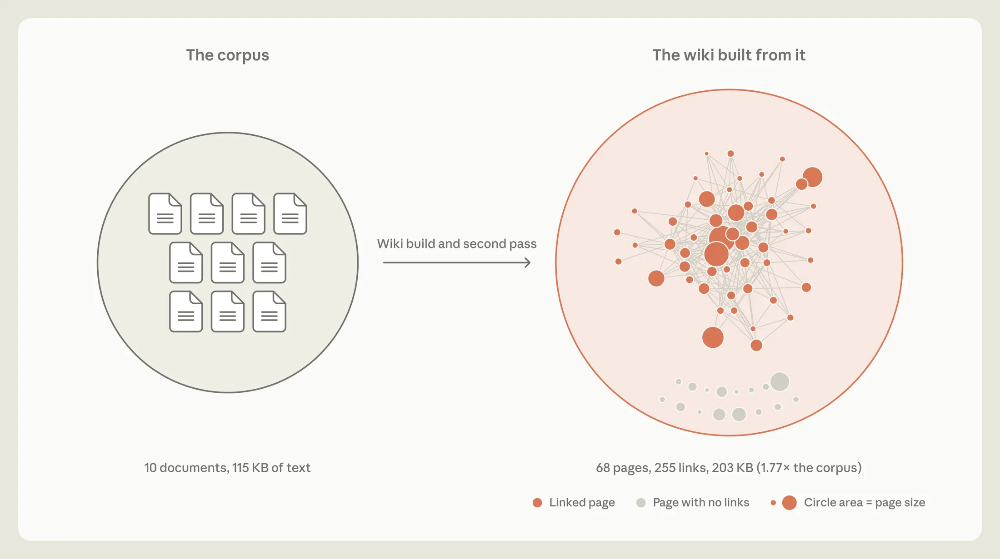
维基比原始文档还大：68 页、255 条链接、203 KB 左边一圈是语料（10 份文档、115 KB 文本），右边一圈是从它建出来的维基：68 页、255 条链接、203 KB，是语料的 1.77 倍。灰色小点是没有任何链接的页——它们既不被找到，也不指向别处。
原文图注：Diagram of a wiki build and second pass. On the left, a circle holds the corpus: 10 documents, 115 KB of text. An arrow leads to a larger circle holding the wiki built from it: 68 pages, 255 links, and 203 KB, or 1.77 times the corpus. Some of the wiki’s pages have no links.
这张图怎么看（3 条）
- 比较两个圆的面积：右边明显更大，标题下写着 1.77× the corpus。
- 看右下角那一片灰色小点：图例说是 Page with no links，这些页等于写了也没人读。
- 圆点大小 = 页面大小（Circle area = page size），中间那些大点就是被反复引用的页。
一句话：不做抽象的维基，只是把原文换了个容器。
The wiki grew to be larger than the raw files.
维基长得比原始文件还大。
Dreaming can promote notes up the memory hierarchy「做梦」可以把笔记提升到层级顶端
顶层是每次会话都会被注入的上下文：省掉搜索，也省掉「知道有东西可搜」。代价是 token 与风险——一条错笔记会跟着每一次会话。所以顶层必须小，Claude Code 的自动记忆只装 MEMORY.md 的前 200 行或 25 KB，当索引用。
Dreaming can also float notes to the top of the memory hierarchy, and the agent harness can preemptively load them into Claude’s context at the start of every session (Figure 13). This means Claude doesn’t need to search for them, or even to know there’s something to search for.
「做梦」还能把笔记浮到记忆层级的顶层，而智能体的运行框架可以在每次会话开始时，把它们预先装进 Claude 的上下文（图 13）。这意味着 Claude 不必去搜，甚至不必知道有东西可搜。
Promoting memories into a new session (a form of context injection) must be done carefully. Injected memories use up valuable tokens, and an incorrect note can be carried into every session. Loading a note also doesn’t guarantee that Claude acts on it: our documentation on Claude Code warns that longer instruction files reduce adherence. So the top layer of the memory hierarchy has to stay relatively small, and much of dreaming’s work here is keeping it that way—by moving some details down the hierarchy and leaving links behind.
把记忆提升进新会话（一种上下文注入）必须小心做。注入的记忆会占用宝贵的 token，而一条错误的笔记可能被带进每一次会话。加载一条笔记也不保证 Claude 会照它做：我们关于 Claude Code 的文档就警告过，指令文件越长，遵守度越低。所以记忆层级的顶层必须保持相对小；而「做梦」在这里的大量工作，就是维持这一点——把一些细节下移到更低层，只留下链接。
Claude Code’s auto memory keeps its injected layer small in the same way, with Claude maintaining it during the session. Claude doesn’t load all of its auto memory into every session’s context window. It loads only the first 200 lines or 25 KB of `MEMORY.md`.10 This header serves as an index, which shows Claude what it knows and where to find it.
Claude Code 的自动记忆也用同样的办法让注入层保持小，由 Claude 在会话期间自己维护。Claude 不会把全部自动记忆装进每次会话的上下文窗口。它只加载 `MEMORY.md` 的前 200 行或 25 KB。10这个头部充当索引，告诉 Claude 它知道什么、去哪里找。
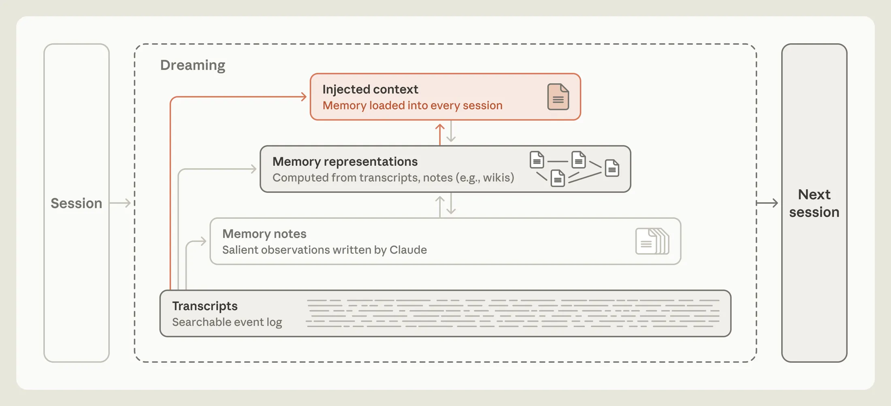
「做梦」的第四种产出：决定顶层注入什么 高亮最顶层的 Injected context：箭头从 Transcripts 与 Memory representations 两处上来，再进入 Next session——这就是「预加载」。顶层容量有限，所以它只该放索引与指针。
原文图注：The memory hierarchy with dreaming, highlighting arrows from transcripts and from memory representations up to the injected context layer at the top, which feeds into the next session.
这张图怎么看（3 条）
- 顺着最上方那条橙色箭头：它从记录层越过笔记层与表示层，直达注入层。
- 注入层到 Next session 的箭头是唯一的出口——每次新会话开场能「白拿」的只有这一层。
- 回想正文的数字：MEMORY.md 只加载前 200 行或 25 KB，这就是「顶层必须小」的具体形态。
一句话：顶层决定「下一次会话开场就知道什么」。
Dreaming can write to the top of the memory hierarchy. Injected context is loaded into every session, and the layers below it are read or searched when Claude needs them.
「做梦」可以写到记忆层级的顶层。注入上下文会装进每一次会话；它下面几层则在 Claude 需要时被读取或搜索。
Dreaming can focus memory on a specific goal「做梦」可以把记忆聚焦到特定目标
记忆长成什么样，取决于指令告诉它「什么才重要」。LAB 的合同任务没写清这一点，几个智能体同写一张共享表，57 条事实只剩 41 条；让 Claude 自己反思失败、重写指令，改成一份合同一页、条款逐字引用，才补到 100%。
Dreaming can also shape how memory grows. An assistant like Claude Duet, for example, often benefits from having memories that are organized around the person it’s helping, and dreaming can be tuned to build memory in service of a particular goal.
「做梦」还能塑造记忆如何生长。比如 Claude Duet 这类助手，如果记忆围绕它所帮助的那个人来组织，往往更得益；而「做梦」则可以按某个特定目标来调校，让它围绕这个目标建记忆。
The instructions that guide how memory grows differ by task and tell Claude what information actually matters. For example, one task in the LAB benchmark simulates a company acquisition and provides a set of contracts.11 The brief is graded on whether it correctly describes the contract terms.
指导记忆如何生长的指令随任务而不同，它们告诉 Claude 哪些信息才真正重要。例如，LAB 基准里有一项任务模拟公司收购，并提供一组合同。11简报的评分要点是：它有没有正确描述合同条款。
We started with basic instructions for generating the wiki that didn’t tell Claude how to use the wiki. This task relied heavily on contract terms. While the wiki was being built, several agents wrote to a shared table of contract terms at the same time (Figure 14, left).
我们起初用的建维基指令很基础，没有告诉 Claude 怎么用这个维基。这项任务高度依赖合同条款。建维基期间，有几个智能体同时往一张共享的合同条款表里写（图 14 左）。
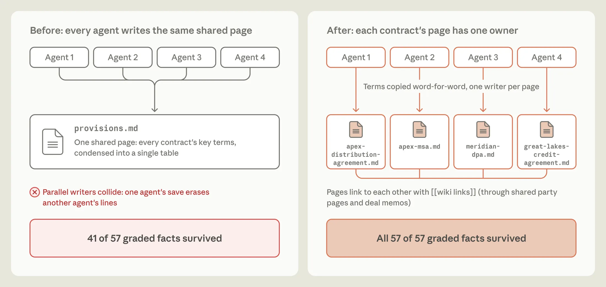
指令改一句：41/57 → 57/57 左：四个智能体同时写一张共享表 provisions.md，一个的保存会抹掉另一个的行，57 条被打分的合同事实只剩 41 条。右：一份合同一个页面、一个作者、条款逐字引用，57 条全在。
原文图注：Two diagrams. Before: four agents write to the same shared page, provisions.md, and one agent’s save erases another’s lines; 41 of 57 graded facts survived. After: four agents each write their own contract’s page, with terms copied word for word; all 57 of 57 graded facts survived.
这张图怎么看（4 条）
- 左图那条汇合的箭头就是问题本身：四条线汇进同一个文件，等于同时写。
- 左下红字 Parallel writers collide: one agent's save erases another agent's lines，是失败的直接原因。
- 右图文件名就是四份真实合同（apex-distribution-agreement.md 等）；中间说明 Terms copied word-for-word, one writer per page 是两个关键改动。
- 底部两块色块对比 41 of 57 graded facts survived 与 All 57 of 57——后者是改指令之后的结果。
一句话：不是模型变强了，是「页面所有权」与「逐字引用」被写进了指令。
How many graded contract facts made it into the wiki, before and after instructions changed. Left: several agents writing to one shared page; 41 of 57 facts survived. Right: one agent per contract, each writing its own page and quoting terms word for word; 57 of 57 facts survived.
指令改动前后，有多少条被打分的合同事实进了维基。左：多个智能体写同一张共享页面；57 条事实里存活 41 条。右：每份合同一个智能体、各写各的页面，条款逐字引用；57 条事实全部存活。
The result was a wiki that was missing key facts. When we graded a brief generated from the wiki, Claude had included only 41 of the 57 facts (72%). When we looked at what had gone wrong, we found that the shared table summarized the contract terms poorly and was missing some of them altogether, because agents had overwritten one another’s work.
结果是一个缺了关键事实的维基。我们给基于这个维基生成的简报打分时，Claude 只覆盖了 57 条事实里的 41 条（72%）。追查问题出在哪时，我们发现那张共享表对合同条款概括得很差，有些条款干脆整条丢失，因为智能体之间互相覆盖了对方的写入。
The contract terms were the most important part of the wiki, but the instructions didn’t say that. To find better instructions, we ran a loop in which Claude reflected on its failures, proposed a change to the instructions, and rebuilt the wiki. This loop allowed Claude to discover how important it was to follow the contract terms, and it rewrote the instructions for building the wiki accordingly.
合同条款是这份维基里最重要的部分，可指令里没这么说。为了找到更好的指令，我们跑了一个循环：Claude 反思自己的失败，提出对指令的修改，然后重建维基。这个循环让 Claude 自己发现「照着合同条款走」有多重要，并据此重写了建维基的指令。
Each contract got its own page in the wiki, written by a single agent, which quoted the terms word for word rather than summarizing them into a shared table. When we graded the brief generated from this improved wiki, 100% of the criteria could be met, up from 72%.
每份合同在维基里各有自己的页面，由单个智能体撰写；条款逐字引用，而不是概括进一张共享表。给基于这个改进版维基生成的简报打分时，100% 的评分要点都能满足，比之前的 72% 提高了。
Dreaming can fill in gaps a session leaves behind「做梦」可以补上单次会话留下的缺口
一次会话只看得到自己那点上下文，所以建维基时会出现指向空页面的链接。第二轮「做梦」跨会话看：九条指向「escrow-agreement」的死链被重指到已有的同文档页面，还补了索引等三页。
When Claude writes memory notes, it sees only the context in that particular session. Dreaming can search across many sessions to find common patterns or correct common mistakes.
Claude 写记忆笔记时，只看得到那一次会话里的上下文。「做梦」可以跨很多次会话搜索，找出常见模式，或修正常见错误。
When building the wikis for the LAB benchmark (as an example, see Figure 14), sometimes Claude would link to pages that hadn’t yet been created. A second dreaming pass closed many of these gaps. On one task (Figure 15), dreaming found nine links to a missing page in the wiki and repointed them to an existing page for the same document. It also added three new pages, including an index, to improve the wiki.
为 LAB 基准建维基时（示例见图 14），Claude 有时会链到还没创建的页面。第二轮「做梦」补上了其中很多缺口。在一项任务里（图 15），「做梦」发现维基里有九条链接指向一个不存在的页面，于是把它们改成指向同一份文档已有的页面。它还新增了三个页面（包括一个索引）来改进维基。
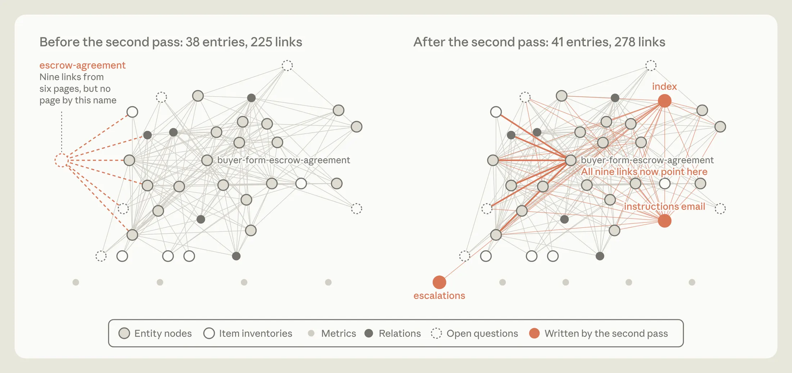
第二轮「做梦」：九条死链被重指 左：38 个条目、225 条链接，其中九条来自六个页面、指向一个叫 escrow-agreement 的不存在页面。右：41 个条目、278 条链接，九条链接全被重指到已有的 buyer-form-escrow-agreement，另外新增 index、instructions email、escalations 三页。
原文图注：Two network graphs of a wiki. Before the second pass: 38 entries and 225 links, with nine links from six pages pointing to “escrow-agreement,” a page that doesn’t exist. After: 41 entries and 278 links, with all nine links pointing to “buyer-form-escrow-agreement” and three new pages: index, instructions email, and escalations.
这张图怎么看（4 条）
- 左图左上角那行红字就是病历：Nine links from six pages, but no page by this name。
- 左图左侧那团虚线箭头全指向空白——它们落在那个不存在的页上。
- 右图把同一批箭头收拢到 buyer-form-escrow-agreement，旁边标着 All nine links now point here。
- 图例里橙色圆点 = Written by the second pass，也就是这一轮新增的三页。
一句话：跨会话的第二轮，补的是单次会话看不见的全局缺口。
The wiki before and after a second dreaming pass.
第二轮「做梦」前后的维基。
Thinking backward, looking forward向后理解，向前看
三个还没答案的问题：记忆该在什么时候写（当场记会分心，后台做梦又不即时）、怎么保新（全量核查不现实，不如聚焦易变信息与节奏）、以及要不要把会话记录搜索当地基。收尾回到开头那句话：只有回头看的时候，才算真正理解。
There are many open questions about how to design memory systems for agents. One is when Claude should create memory. When Claude works on a task, it can write to a memory store (e.g., a folder, file, or database), capturing salience at the source and making important details immediately available for future turns or sessions. But logging notes in the moment inevitably draws Claude’s attention away from its main task. In contrast, dreaming can push memory creation to the background, but any outputs from dreaming may not be immediately accessible to Claude.
如何为智能体设计记忆系统，还有很多未解的问题。其一是 Claude 应该在什么时候创建记忆。Claude 干活时，可以往记忆存储里写（比如文件夹、文件或数据库），在源头捕捉显著性，让重要细节立刻可供之后的轮次或会话使用。但当场记录笔记，难免会把 Claude 的注意力从主任务上拉走。相反，「做梦」可以把记忆创建推到后台，但「做梦」的产出未必能立刻被 Claude 用到。
Another question is how to keep memory reliably up to date. Claude can make incorrect predictions or write rules to memory that are wrong from the start. Memory can also drift and become irrelevant as the environment changes. Dreaming is one way to fix these mistakes (Figure 8), but it requires compute.12 Directing Claude to continuously check all its memories might not be practical. It may be important instead to focus dreaming on information that’s likely to change or to carefully tune the cadence of dreaming (e.g., based on how often memories are accessed).
另一个问题是如何让记忆可靠地保持最新。Claude 可能做出错误的预测，也可能把一开始就错的规则写进记忆。记忆也可能随环境变化而漂移、变得不相关。「做梦」是修正这类错误的一种办法（图 8），但它需要算力。12让 Claude 持续检查全部记忆未必可行。更重要的也许是把「做梦」集中在可能变化的信息上，或者仔细调整「做梦」的节奏（比如按记忆被访问的频繁程度）。
It’s also reasonable to consider transcript search as the foundation of Claude’s memory. Combining representations (e.g., wikis) with search (Figure 10) can sometimes be effective. But Claude needs to use compute to maintain memory representations and make sure they don’t accumulate errors or hallucinations.
把会话记录搜索当作 Claude 记忆的基础，也是合理的。把记忆表示（比如维基）和搜索结合起来（图 10），有时确实有效。但 Claude 需要花算力去维护这些记忆表示，确保它们不会积累错误或幻觉。
Even though Claude’s judgment about salience has improved, no model can really know what will happen in future turns. Dreaming gives Claude an opportunity to look backward and use compute to organize its memory, correct mistakes, and maintain representations that allow future sessions to access memory more readily. Memory systems will evolve as Claude gets more capable, and we still have a lot to learn about designing Claude’s memory systems.
尽管 Claude 对显著性的判断已经进步，但没有模型能真正知道未来的轮次会发生什么。「做梦」给了 Claude 一个回头看的机会，用算力整理记忆、修正错误、维护记忆表示，让未来的会话更容易取用记忆。随着 Claude 能力变强，记忆系统也会演进；关于如何设计 Claude 的记忆系统，我们还有很多要学。
See our cookbooks for getting started with dreaming and knowledge wikis.
补充材料
下面几块都是译者所加，用来补上原文没展开的部分。正文里的虚线链接、虚线术语、上标数字，都能悬停看卡片；这里给出完整的清单，方便你事后再回头查。
延伸阅读地图
原文 22 处正文引用，指向 21 个不同链接；另有 15 张配图未计入。按「不读会不会误解本文」分成三档：必读 / 背景 / 可选，建议顺序即卡片上标注的数字。每条都写了「不点开也能拿到的重点」，所以你可以完全不跳转地读完这篇文章。
智能体记忆库（memory stores）
platform.claude.com · Using agent memory
正文对应：记忆目录
这是什么：Managed Agents 记忆库文档：记忆挂进会话沙箱当目录，agent 用普通文件工具读写，改动留不可变版本。
为什么值得点：正文说每个会话都是新的、只靠记忆目录延续，这套机制全在这篇：单条 100 kB、单库一万条、每会话最多 8 个，决定了记忆必须写成很多小文件。
访问说明：直连可达（本机需代理，否则 platform.claude.com 会 307 跳到 www.anthropic.com）；无需登录，Beta 头为 agent-memory-2026-07-22。
不点开也能拿到的重点
挂载后记忆库作为目录出现在沙箱里，系统提示会自动加一条说明告知位置；自托管沙箱则是先下载到本地再同步。绑定可设只读或读写，文档建议对不可信输入用只读——否则一次注入成功，写进去的内容会被后续会话当可信记忆读。另有不可变版本便于审计与回滚。
- 「记忆库是工作区级文本集合，挂载后就是普通目录。」
- 「单条上限 100 kB、单库一万条，所以要写小文件。」
- 「每会话最多挂 8 个库，默认读写、也可设只读。」
- 「不可信输入应挂只读，防注入内容变成可信记忆。」
做梦（Dreams）
platform.claude.com · Dreams
正文对应：被称为
这是什么：Dreams 文档：一次 dream 读一个已有记忆库加 1 到 100 个会话，产出另一个重组后的记忆库。
为什么值得点：正文那句称为「做梦」就指这里，文档写清了产品形状——异步作业、输入库不改写、输出是新库，所以可以审阅后再采纳。
访问说明：直连可达（本机需代理，否则被 307 驳回）；研究预览需申请权限，但文档本身无需登录。
不点开也能拿到的重点
Dream 读入已有记忆库与 1 到 100 个会话，合并重复项、用最新值换掉过时或矛盾条目、把新洞见浮出来，写进全新的输出库，输入库永不被修改。instructions 只做高层引导，它是综合改写而非逐句编辑器，指定改某一句通常无效。
- 「输入是旧库加 1 到 100 个会话，输出是另一个新库。」
- 「默认动作：并重复、换过时值、浮出新洞见。」
- 「instructions 只做高层综合引导，不能逐句编辑。」
- 「研究预览，仅指定模型，ZDR 与 HIPAA 不适用。」
用动态工作流做一场梦
platform.claude.com · Dreaming with a dynamic workflow
正文对应：做梦入门
这是什么：Cookbook 教程：用一条动态工作流搭最小可用的 dream，把会话逐份蒸馏成带索引的维基。
为什么值得点：正文结尾的做梦入门链接就是它；文章讲的 dreaming 各部件在这里都有对应代码与提示词，还给了真实价目，能把类比落成可跑的东西。
访问说明：直连 200，无需登录；页面附 GitHub 版 notebook 可下载。
不点开也能拿到的重点
导出会话成纯文本，在一个会话里描述任务，lead agent 写出工作流并启动；每份转录交给 analyzer 蒸馏成小文件、只增补不覆盖，organizer 收尾，最后只读挂载。示例设三道坎：事实过期、细节埋在工具输出、主题重叠。11 份示例约 0.36 美元、两分半钟。
- 「导出会话、逐份蒸馏、organizer 收尾、只读挂载。」
- 「analyzer 只增补不覆盖，重叠主题靠追加与链接合并。」
- 「示例三道坎：事实过期、细节埋在输出、主题重叠。」
- 「可挂 cron 每晚跑，只处理上次之后的会话。」
LLM 维基：让模型替你维护知识库
gist.github.com · llm-wiki · GitHub
正文对应：维基
这是什么：Karpathy 提案：不用 RAG 每次重查原文，让 LLM 增量维护一座持久维基。
为什么值得点：正文把 wiki 定义为 Claude 自己写和维护的页面集合，出处就是它；三层结构与收录、提问、体检三种操作，正是文章多会话建维基那套流程的原型。
访问说明：直连可达（本机需代理）；gist 公开，无需登录，文件名 llm-wiki.md。
不点开也能拿到的重点
区别在于知识编译一次并保持最新，而非每次查询重新推导：新资料进来就更新实体页与主题摘要、标出新旧矛盾，回答过的分析也回填成新页。三层是原始资料不可变、维基由 LLM 独占写、schema 定义约定。靠索引当目录、日志当时间线，上百份资料不必上向量库。
- 「知识编译一次并保持最新，这是相对 RAG 的差异。」
- 「三层：原始资料、LLM 独占的维基、schema 约定。」
- 「索引当目录，日志用统一前缀即可 grep。」
- 「定期体检：查矛盾、过时断言、孤儿页与缺交叉引用。」
知识维基快速上手
github.com · claude-quickstarts/managed-agents/knowledge-wiki at main · anthropics/claude-quickstarts
正文对应：知识维基
这是什么：Anthropic 快速上手：把语料一次读成记忆库里的 markdown 维基，之后只从维基作答。
为什么值得点：正文结尾另一条链接，也是文章那套多会话建维基最完整的公开实现；README 给了成本与收益——建成约 19 美元、约 240 个问题回本。
访问说明：直连可达（本机需代理）；仓库公开，README、prompts 与 utilities.py 都能直接读。
不点开也能拿到的重点
卖点是保留来源与冲突：每条事实带出处，矛盾保持矛盾、被取代的数字保持被取代。小模型带维基作答与直接检索原文的大模型差距在 1 个百分点内，价格约十五分之一。工作流分四段：抽取、补缺口、逐条核对、收尾整理。
- 「每条事实带出处，冲突与被取代的数字都保留。」
- 「小模型加维基对打大模型检索：差 1 个百分点、价约 1/15。」
- 「建成一次约 19 美元，约 240 个问题回本。」
- 「四段工作流：抽取、补缺口、核对、整理。」
Claude Code 如何记住你的项目
code.claude.com · How Claude remembers your project
正文对应：Claude Code Claude Code 的自动记忆
这是什么：CLAUDE.md 与自动记忆并存，后者每次会话只加载 MEMORY.md 前 200 行或 25KB。
为什么值得点：正文用它论证注入层必须小；文档把阈值与后果写死——超限的写入仍成功，但超出部分下次加载被丢弃，并回错误要求重写索引。
访问说明：直连可达（本机需代理）；正文较长，自动记忆一节在页面前三分之一。
不点开也能拿到的重点
两套系统都在会话开始加载，且只当上下文、不是强制配置。自动记忆把笔记按 type 分四类：user 角色偏好、feedback 纠正与确认过的做法、project 代码看不出的决定、reference 外部信息在哪，并跳过能由代码推导的东西。存在本机项目目录，同仓库所有 worktree 共享。
- 「人写 CLAUDE.md、Claude 自写自动记忆，都每次加载。」
- 「只加载 MEMORY.md 前 200 行或 25KB，超出即丢弃。」
- 「笔记四类：user、feedback、project、reference。」
- 「同仓库的 worktree 共享一份，但不跨机器同步。」
睡眠时计算：不止在测试时扩算力
arxiv.org · Sleep-time Compute: Beyond Inference Scaling at Test-time
正文对应：睡眠时计算
这是什么：2025 年 Letta 与伯克利的论文：提问前先离线想，预判会问什么、预计算可复用的量，压低测试时算力。
为什么值得点：正文点名的睡眠时计算就是它，也是全文类比的技术源头；读完能明白离线整理记忆为何可能省算力，而不只是多花一份钱。
访问说明：arXiv 摘要页直连 200，无需登录；PDF 与代码在 github.com/letta-ai/sleep-time-compute。
不点开也能拿到的重点
查询到达前，模型先对同一份上下文跑一轮睡眠时计算：猜用户会问什么，把中间结论算好。同准确率下测试时算力约降 5 倍；加大睡眠时算力，两个推理任务还能各涨 13% 与 18%。多查询版本摊薄成本，平均每题降 2.5 倍。
- 「离线预判并预计算，同准确率约省 5 倍测试时算力。」
- 「加大睡眠时算力可再涨 13% 与 18% 准确率。」
- 「同类问题摊薄，平均每题成本降 2.5 倍。」
- 「收益与提问可预测性相关，越可预测越划算。」
压缩（compaction）总览
platform.claude.com · Compaction overview
正文对应：压缩
这是什么：压缩文档：用服务端摘要替换较早轮次把长任务压回上下文窗口，分按需与按阈值两条路线。
为什么值得点：正文把它列为不算 agent memory 的三种机制之一，只给了一个括号定义；读完才知它和做梦的分工——一个丢旧轮次，一个沉淀跨会话知识。
访问说明：直连可达（本机需代理，否则 307 到 www.anthropic.com）；Beta 头 compact-2026-09-04，无需登录。
不点开也能拿到的重点
按需压缩由你请求摘要，把摘要块放在消息首位替换被总结的轮次，可逐字保留最近几轮、可后台跑、可保留思考块；按阈值压缩设触发点，由接口在普通请求里自动丢弃此前轮次。另一条路是自己写摘要器。
- 「用服务端摘要替换旧轮次，换取更长工作窗口。」
- 「按需压缩：摘要块放首位，最近几轮可逐字保留。」
- 「按阈值压缩：到点自动丢弃前文，不改代码。」
- 「按规则清旧工具结果的属于上下文编辑，不做总结。」
Claude 托管智能体总览
platform.claude.com · Claude Managed Agents overview
正文对应：Claude 托管智能体
这是什么：托管智能体总览：Anthropic 托管的 agent harness，围绕智能体、环境、会话、事件四个概念。
为什么值得点：正文实验就跑在它上面——每题开新会话、只有记忆目录延续；读总览才看清会话是新的、记忆是挂载的这个组合怎么成立。
访问说明：直连可达（本机需代理）；Beta 头 managed-agents-2026-04-01，无需登录。
不点开也能拿到的重点
与消息接口并列：后者把模型调用给你、循环自己写；前者托管 harness、沙箱、工具执行与事件历史，适合几分钟到几小时的异步长任务。顺序是先建智能体（模型、提示、工具、MCP、技能），再建环境（云端或自托管沙箱），再开会话发事件、用流式接口收结果。
- 「四概念：智能体、环境、会话、事件。」
- 「托管循环、沙箱、工具执行，适合长跑异步任务。」
- 「内置 bash、文件读写、glob、grep，自带缓存与压缩。」
- 「环境可选云端沙箱或自托管沙箱，满足合规要求。」
记忆工具（memory tool）
platform.claude.com · Memory tool
正文对应：写
这是什么：记忆工具文档：客户端工具，Claude 用查看、创建等命令操作 /memories 下的文件，跨会话留存。
为什么值得点：正文说 Claude 可以把要点写进记忆库这一处指向它；它给出最朴素形态——文件就在你的存储里，那个路径只是被映射出去的前缀。
访问说明：直连可达（本机需代理）；无需登录，文档含完整的调用与结果示例。
不点开也能拿到的重点
关键在客户端执行：Claude 只发文件操作请求，你的应用在自有存储上执行并回填结果，数据与位置都由你定。开启后会先查看记忆目录再动手，边做边写。安全要求是所有操作限制在该目录内，防止路径穿越。
- 「模型只发命令，真正执行在你的应用里。」
- 「/memories 只是前缀，映射到真实存储由你决定。」
- 「Claude 先查记忆目录再动手，边做边写。」
- 「操作必须限制在记忆目录内，防路径穿越。」
持续学习基准 1.0 发布
continual-learning-bench.com · Continual Learning Bench 1.0
正文对应：持续学习基准（CL-Bench）1.0
这是什么：2026 年 5 月发布的持续学习基准：任务序列彼此不独立，允许被测系统在评测中改变自己。
为什么值得点：正文那段数据库任务与六个模型的分数差都源自这里；读它才知道分数怎么算——用增益把本来就强和真学到的分开，这正是那张图的读法。
访问说明：页面靠脚本从 /news/content/cl-bench-1-0.md 加载正文，直接抓页面只有标题；改抓该 markdown 才读到全文。
不点开也能拿到的重点
主流基准默认模型无状态，做完一题当没发生。它要求任务有潜在结构、有可学习机制、初始留余量，并禁止拿现有基准串起来充数。除累计奖励与成本外另设增益：拿同一系统的无状态版本作对照，量出多少提升真来自先前经验。示例按交互次数计效率，答错满额罚。
- 「任务不独立，允许系统在评测中改变自己。」
- 「增益用无状态版本作对照，剥离原始能力只留学习。」
- 「四准则：留余量、有机制、有结构、人能越做越好。」
- 「示例按与环境的交互次数算效率，答错满额罚。」
Harvey 法律智能体基准
github.com · GitHub - harveyai/harvey-labs: A benchmark built to evaluate and improve agent capabilities for supporting legal work.
正文对应：Harvey LAB
这是什么：Harvey 开源的法律智能体基准：任务集（指令、文档、评分细则）加执行骨架与打分器，用真实法律工作考 agent。
为什么值得点：正文用它做第二组评估，得出跨多文档的维基更有用；读仓库才知道分数是全通过才记 1.0，这解释了文章为何盯着漏掉的事实数。
访问说明：直连可达（本机需代理）；README 与评测方法文档可读，仓库公开、MIT 许可。
不点开也能拿到的重点
每个任务在 task.json 里内联等权、通过与不通过的评分细则，没有标准答案文件，每条细则说明评委该看什么。两个大模型评委独立语义打分，不做关键词匹配。全通过制：所有条目都过才记 1.0，漏一条即 0.0。
- 「评分细则内联在任务文件里，没有标准答案文件。」
- 「两个大模型评委独立语义打分，不用关键词或正则。」
- 「全通过制：过一条与否直接决定 1.0 或 0.0。」
- 「2010 个任务、24 个以上法律领域，附执行骨架。」
睡眠框架：让模型在持续学习中不遗忘
research.google · The sleep framework: A new way for LLMs to retain knowledge in continual learning
正文对应：做梦
这是什么：Google Research 2026 年 10 月的博客：给模型加睡眠期，离线扩容专家、把短期记忆蒸馏进长期参数。
为什么值得点：正文把做梦的命名也挂在这篇上，但它改的是权重而非上下文；读它能划清文章开头那句记忆不含权重变化的界线。
访问说明：本机直连超时，走本地代理 200；无需登录。
不点开也能拿到的重点
清醒期把信息临时存进高频记忆，睡眠期停止接收输入，打开预分配的专家记忆块，用自生成练习题更新权重。巩固两步：参数扩容把新的低秩专家并入稳定块；知识播种用蒸馏加强化模仿，按语义相似度与编辑距离给奖励；最后突触修剪重置临时参数。
- 「睡眠期用自生成练习题离线微调，把上下文写进权重。」
- 「两步：参数扩容、知识播种；最后突触修剪重置。」
- 「宣称可保住长上下文知识到 1000 万 token。」
- 「作者明说只是借神经科学术语，机制不涉生物过程。」
上下文学习与归纳头
anthropic.com · In-context learning and induction heads
正文对应：上下文学习
这是什么：Anthropic 2022 年的机制可解释性研究：定位归纳头这个两级注意力电路，并用它解释上下文学习。
为什么值得点：正文用它界定上下文学习等于单次对话内获得的知识，属被排除的三种机制之一；想知道它在电路层面长什么样，这篇最直接。
访问说明：链接指向的 anthropic.com 落地页正文只有一句「读论文」（抓下来约 248 字符），实质内容在 transformer-circuits.pub 的同名长文。
不点开也能拿到的重点
前词头把上一个词的信息搬到当前位置，第二个注意力头再用它去找上次这个词之后跟了什么，从而补全重复过的序列。归纳头在两层及以上模型里普遍出现，其形成与训练早期相变重合，也正是上下文学习能力跃升之时。
- 「归纳头由前词头与归纳头两级注意力组合，做补全。」
- 「只在两层及以上模型出现，单层没有这种组合。」
- 「形成与训练早期相变重合，同期上下文学习跃升。」
- 「原文链接的落地页几乎是空的，正文在论文站。」
睡眠中系统记忆巩固的机制
nature.com · Mechanisms of systems memory consolidation during sleep
正文对应：这些经历
这是什么：2019 年《自然神经科学》综述：把睡眠巩固拆成海马重放、慢波与纺锤波调控、记忆被抽象三层机制。
为什么值得点：正文说经历被逐渐蒸馏并整合进新皮层，这半句全靠它撑；它讲清重放如何被慢波与纺锤波耦合放大、记忆又怎样从情节变成要点。
访问说明：摘要与图表清单可读，全文需订阅；本地抓取未被拦截，正文为付费墙预览。
不点开也能拿到的重点
巩固是嵌在全局突触下调里的主动过程：慢波睡眠中海马表征反复重放，既推动依赖海马的记忆也推动不依赖它的记忆；慢振荡、纺锤波与涟漪的相位耦合既调节远隔脑区间信息流，也在皮层造出可塑性窗口；结果是记忆质变成要点式表征。
- 「巩固是嵌在突触下调中的主动过程，不是被动沉淀。」
- 「慢振荡、纺锤波与涟漪相位耦合，构成传递窗口。」
- 「记忆被质变成抽象要点，而非逐字保存。」
- 「海马重放同时推动依赖与不依赖海马的两类记忆。」
海马体与新皮层为何是互补学习系统
stanford.edu · Why There Are Complementary Learning Systems in the Hippocampus and Neocortex
正文对应：海马体
这是什么：1995 年《心理学评论》的奠基论文：海马快速存单次经历，新皮层慢速学习并靠重放编织结构。
为什么值得点：正文第一句说海马在其中扮演核心角色，引的就是它；这篇论证了为什么必须两套系统、为什么重放要交错，读完才明白文章为何拆成捕获与巩固两层。
访问说明：PDF 直连可下（约 5 MB、39 页），无需登录；读摘要与首节即可抓住论证骨架。
不点开也能拿到的重点
双侧海马损伤造成顺行性遗忘而远期记忆保留，作者用连接主义模型解释：海马用稀疏、模式分离的表征一次学会新事，新皮层靠缓慢交错的权重更新提取统计结构；每次重放把新旧记忆交错送回皮层，皮层只改一点点，于是既吸收新知又不覆盖旧结构。
- 「海马单次快速编码，新皮层慢速统计学习。」
- 「重放把新记忆交错插入旧记忆，避免灾难性遗忘。」
- 「远期记忆是皮层权重累积，近期依赖海马重演。」
- 「双侧海马损伤后顺行性遗忘而远端记忆保留。」
人类休息时的海马重放优先处理学得弱的信息
nature.com · Human hippocampal replay during rest prioritizes weakly learned information and predicts memory performance
正文对应：休息
这是什么：2018 年《自然通讯》研究：用功能磁共振解码人类休息时的海马重放，学得越弱的项目重放越多。
为什么值得点：正文说安静休息时海马重放近期经历，这篇是罕有的人类证据，还回答重放不匀、优先补最脆弱记忆，正好支持文章挑值得记的取舍。
访问说明：开放获取，摘要与正文均可读；本机直连遇 cookie 跳转，跟随后 200。
不点开也能拿到的重点
被试学 15 个物体后做记忆测验，再在清醒休息期用磁共振模式分析逐物体追踪海马重放：记得差的物体被重放更多。12 小时后重测，重放越多的物体记得越好，而这种跨会话提升只出现在期间睡过觉的被试身上。
- 「休息期海马重放可用磁共振逐物体解码。」
- 「学得弱的项目重放更多，重放像补短板而非复习。」
- 「重放量能预测后续记忆表现。」
- 「跨会话记忆提升只在期间睡过觉的人身上出现。」
海马尖波涟漪如何挑选要被记住的经历
science.org · Selection of experience for memory by hippocampal sharp wave ripples
正文对应：部分经历
这是什么：2024 年《科学》论文：小鼠清醒期海马尖波涟漪挑出部分试次，睡眠期只重放被挑中的片段。
为什么值得点：补足正文只有部分经历被巩固这半句：文章说海马抓经历、只有部分留下，这篇给出怎么挑的机制，即清醒涟漪的内容决定睡眠重放什么。
访问说明：science.org 有 Cloudflare 挑战，直连与代理均 403（只回 Just a moment），全文读不到；本条 digest 依据出版社登记的官方摘要。
不点开也能拿到的重点
记录小鼠海马大量神经元并降维后发现，连续穿行时群体持续漂移，同时编码地点与事件。在喝到奖励、脑状态切换时出现尖波涟漪，某些试次才有，涟漪里的放电内容可解码出它周围的试次块；睡眠期涟漪继续重放那些清醒时被反复激活的段落。
- 「清醒涟漪挑出部分试次，睡眠期只重放被挑中的。」
- 「神经元群体连续漂移，同时编码地点与事件。」
- 「涟漪放电内容可解码出它前后的试次块。」
- 「清醒涟漪的重放内容就是打标签的机制。」
突触标签与长时程增强
nature.com · Synaptic tagging and long-term potentiation
正文对应：一段记忆
这是什么：1997 年《自然》短篇通讯：强刺激在突触上留下只存续数小时的标签，把新合成的蛋白就地捕获。
为什么值得点：正文说化学信号可以在经历前后标记一段记忆，标记二字就来自这类工作；它也回答了为什么被标记的记忆在离线期重放得更多。
访问说明：摘要可读，全文需订阅；本机直连遇 cookie 跳转，跟随后 200。
不点开也能拿到的重点
晚期长时程增强需要新蛋白，而合成在胞体、效应却是输入特异的，于是设想被强化的突触上生成短命标签就地捕获蛋白。实验支持：弱刺激平常只产生早期增强，但若同一群神经元的另一条输入先前被强刺激，弱刺激也能诱发依赖蛋白合成的晚期增强；标签约三小时衰减。
- 「晚期增强需要新蛋白，但蛋白在胞体合成。」
- 「假说：突触上生成短命标签，就地捕获蛋白。」
- 「另一输入先被强刺激，弱刺激也能诱发晚期增强。」
- 「标签约三小时衰减，持久性看神经元此前活动。」
Claude 打宝可梦教给我们的 agent 课
youtube.com · Lessons on AI agents from Claude Plays Pokemon
正文对应：要求 Claude 在复杂的长时程任务里做导航
这是什么：官方 45 分钟对谈：两位研究员复盘 Claude 玩宝可梦，含记忆系统与长期存储一节。
为什么值得点：正文拿它证明宝可梦是长程导航的好测试场；10 分 20 秒起正好讲记忆系统与长期存储，正是文章用全局文件当仪表盘那类做法的背景。
访问说明：页面与元数据可读；字幕下载被限流（429），未取得逐句转录，digest 依据官方标题、简介与章节表。
不点开也能拿到的重点
对谈按章节推进：为什么选宝可梦——回合制、状态可见、目标可验证；4 分 30 秒讲技术上怎么让它玩；10 分 20 秒专讲记忆与长期存储；之后对比各模型版本表现、讨论如何迁移到真实任务，最后是失败集锦与做 agent 的建议。
- 「选宝可梦的理由：回合制、状态可见、目标可验证。」
- 「10 分 20 秒一节专讲记忆系统与长期存储。」
- 「按模型版本对比表现，并讨论向真实任务迁移。」
- 「属工程复盘，无基准数字，可作文章案例背景。」
Claude Duet 入门
support.claude.com · Get started with Claude Duet
正文对应：Claude Duet
这是什么：Claude Duet 入门页：研究预览里像给人发消息一样用的助手，能操作已连接的应用，在云端干活。
为什么值得点：正文说 Duet 这类助手受益于围绕人组织记忆，并以此说明做梦可按目标调；读这篇能看到接入条件与美国限定，以及记忆怎么继承。
访问说明：直连 200，无需登录；页面标注本周更新，内容会随预览变化。
不点开也能拿到的重点
它跑在你的账号上，已有记忆、技能、连接器从第一条消息起就在；主线程一路到底，可分频道但共享同一份记忆，关掉应用也在云端继续。每天早晨给一份简报，白天推进度；较大的活交成文件，成品出现在成品页；发消息、付款、签文件、删除前会先问。
- 「跑在你的账号上，记忆、技能、连接器直接继承。」
- 「仅美国 Pro、Max、Ultra，走候补名单，团队版未开。」
- 「早晨给简报，白天更进度，大活交付为文件。」
- 「发送消息、付款、签文件、删除前会先征得同意。」
术语表
正文里带虚线底线的词，悬停即出解释；这里是完整 23 条，可当速查用。
文章定义为从用户互动、被派任务等经验中获得、跨会话保留、可日后读作上下文的知识；明说排除改权重、上下文学习与压缩。
指用空闲算力回看日志与会话记录，纠错、写笔记、造记忆表示，并决定下次预载什么；它在后台跑，产出不一定立刻可用。
像人睡觉时大脑把白天的经历慢慢整理成长期知识。
Claude 在会话中把显著发现写进记忆文件夹的短条；文章强调它只看得到写那一刻的上下文，可能一开始就错，也会随环境漂移。
像随手贴的便签：好找，但不保证还准。
图注称其为可搜索的事件日志，记下 Claude 每个会话做过的事；它是校验记忆笔记时的依据，也是做梦的原料。
像行车记录仪，事后可以回查。
指 Claude 为方便翻记忆而新建的组织结构，典型是 wiki；链接像一张地图，让检索走得更快，但要花算力维护。
像给书库编目录并加交叉引用。
Claude 自己写并维护、互相链接的页面集合，汇集它对某主题所知；链接等于一张可检索记忆的地图，但它也可能膨胀到比原文还大。
像一张越画越细、彼此链接的地图。
指每个会话开头由运行框架抢先载入的记忆层，Claude 不用搜索、甚至不必知道有东西可搜；它吃 token，必须保持很小。
像每天开工时摆在手边的提要卡。
指 Claude 当场判断什么值得记；实验发现强模型自由判断比预设规则更有效，「只记失败」这类规则反而削弱收益。
像编辑判断哪句话值得进标题。
指部分经历被巩固成长时知识的过程，人脑多在离线时发生；文章把做梦比作智能体版：从日志里提炼笔记与表示。
像把当天的录像剪进长期档案。
指海马体在睡眠和安静休息时反复回放近期经历；被标记为重要的记忆回放得更频繁，从而稳定并整合进长期记忆。
像大脑在离线时反复回放同一段经历。
文章说它当场捕捉经历，让记忆快速形成、立刻可用；但它只管录入，长期知识要靠离线巩固进新皮层。
像临时便签本：存得快，但不长久。
文章称它是存放我们多数「知识」的脑区；离线时海马体回放经历，慢慢把它们提炼并整合到这里。
像脑子里那只长期档案柜。
指模型一次能装下的上下文容量；文章说压缩是为了在新窗口里接着干，并明确把它排除在智能体记忆之外。
像一张只摊得开几页的桌面。
指单次对话之内获得的知识；文章把它与跨会话保留的智能体记忆并列为不同机制，只有后者算记忆。
指 Claude 写摘要替换较早的对话轮次，好在新上下文窗口继续工作；文章明确不把它算作智能体记忆。
像把旧对话压成一页摘要。
Letta 与 UC Berkeley 提出：让模型在交互之间的空闲时间重整已有上下文；文章把它看作做梦这个想法的出处。
像下班后留在工位上整理材料。
持续学习基准，测智能体能否靠记忆完成长程任务；文章的数据库问答要求答错后记录、立论、验证并写成规则。
跨会话持久、可读可写的文件夹，是文章多个实验里 Claude 唯一的记忆载体；放多少文件、怎么组织直接影响表现。
像跨会话共用的一个文件柜。
指包在模型外、驱动智能体的那层装置：管会话循环与工具，并在每轮开头把注入上下文预载进来。
像舞台的灯光与提词器，不是演员。
指答错后记录失败、提出猜想、动手验证，再把结论写成下次可用的规则；文章说 Opus 5 是第一个真正闭环的模型。
像复盘、立论、验证再改规则的循环。
指评测里逐条打分的项目，如简报该覆盖哪些事实；文章用命中比例衡量 wiki 的价值，25 题里从 13% 升到 48%。
像阅卷时逐条对照的得分点。
指 Harvey LAB 要求 Claude 依据给定文件写出、再按清单判分的法律文书；文章用它比较 wiki 与纯搜索的表现。
模型读写上下文的最小计量单位，大致相当于一个词或词的一部分。本文用它衡量两件事的成本：把记忆注入每次会话，以及用「做梦」维护记忆。
像按字数收费：字越多，钱和注意力都越贵。
译者注
正文中上标数字对应这里，解释的是「直译会看不懂」或「原文本身含糊」的地方。
开篇那句克尔凯郭尔
原文是 life can only be understood backward, but it must be lived forward，出自克尔凯郭尔的日记。作者拿它当全文骨架：记忆系统总是先有经历、后有整理——「做梦」就是把「向后理解」变成一个可以随时调度的计算动作。
大脑类比到哪里为止
海马体与新皮层的分工只是类比来源，不是等价关系：人的「巩固」是生物过程，有睡眠这种硬节律；智能体的巩固是一次随时可跑的计算任务，也没有必须等到的「夜里」。
「智能体记忆」的边界很窄
本文的记忆只算跨会话保留、之后能回读的上下文。改权重属于训练；上下文学习只在单次对话内；压缩是给同一个会话腾地方——这三者都不算记忆。
CL-Bench 的关键设置
每题都从一个全新会话开始，模型手里唯一的跨会话线索就是那个记忆目录。所以得分提升只能归因于它自己写进记忆的东西，而不是上下文里残留的痕迹。题目说的「长时程」，指要连着答几十道题、靠记忆跨题积累，而不是单题里推理得更久。
「第 10,000 步」是什么口径
步指智能体在游戏里的一次动作，翻菜单、读记忆这些也算。比较的两段运行都截在约第 10,000 步，比的是「同样的步数下，记忆长什么样」，不是「谁玩得久」。
为什么「只记录失败」反而更差
这条规则替模型决定了什么值得记，砍掉了它自己判断显著性的空间。图 5 右量的是「有记忆相对无记忆的增益变化」：Opus 5 −0.234、Opus 4.7 −0.150——负号表示增益被吃掉。
月见山这一段的地理
月见山（Mt. Moon）在深灰市（Pewter City）与华蓝市（Cerulean City）之间，洞内有一段单向崖边，掉下去会回到山前那条路。原文引用的是游戏内文本，所以 Mt Moon 有时不带句点。
维基（wiki）在这篇文章里指什么
链接指向 Karpathy 那份「用 wiki 组织知识」的 gist。本文的用法更具体：页面由 Claude 自己写、自己连，链接就是检索路径。注意两个口径——13%→48% 是「只用维基」，54%→61% 是「搜索 + 维基」。
博尔赫斯那个地图
《论科学的精确性》里，制图师把地图画得和帝国一样大，后代只能让地图烂在地里。作者用它形容一种失败：维基如果只做搬运、不做抽象，就不比原始文档更有用。
200 行 / 25 KB 怎么理解
两个上限哪个先到算哪个：MEMORY.md 只把头部当索引用。超出的部分并没有丢，仍然留在文件里，需要时再读——这正是「顶层小、细节下沉、链接留下」的具体实现。
LAB 基准是什么
Harvey 的法律任务基准：给一组文档，要求写法律简报，再按评分要点逐条打分。本文借它做了两类任务——并购问答（要跨文档综合）与合同条款描述（要逐字保真）。
图 8 的位置
正文直到最后的讨论部分才提 Figure 8，指的是前面那张「向华蓝市推进」的折线图（本页图 8）：它同时画出「做梦修正后」「原始记忆」「无记忆」三条曲线。